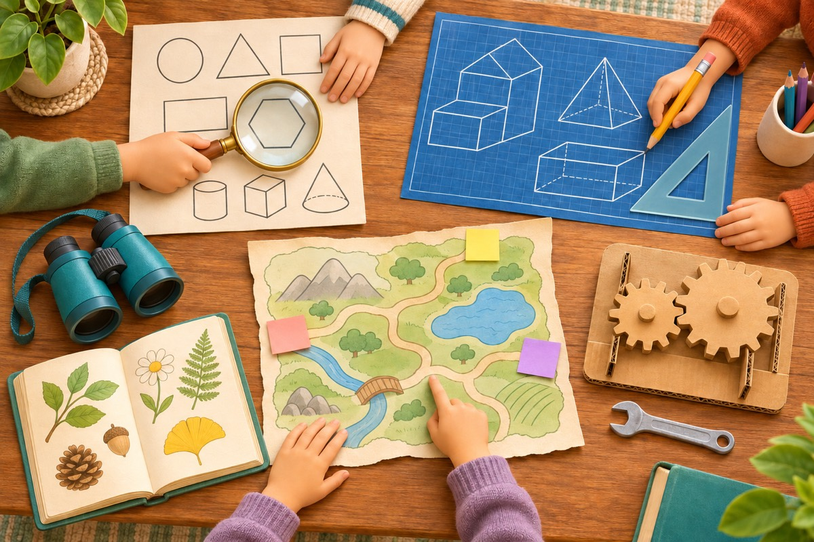
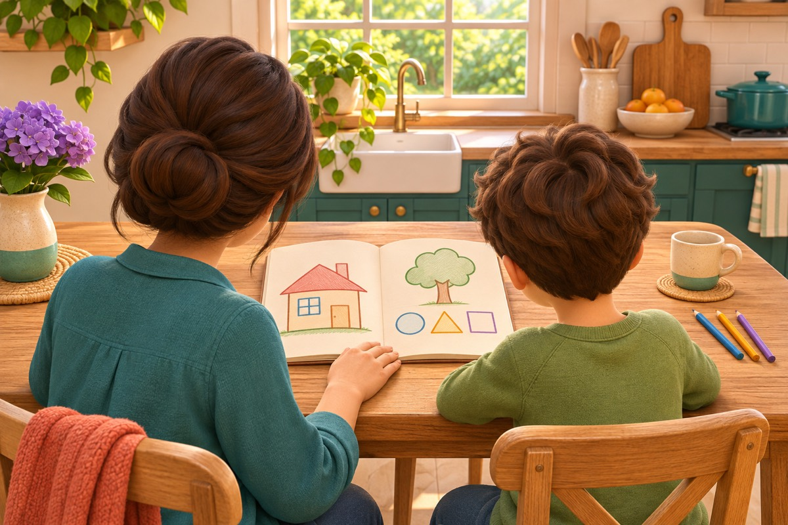

<!doctype html>
<html lang="tr">
<head>
<meta charset="utf-8">
<meta name="viewport" content="width=device-width, initial-scale=1">
<title>Öğrenme Tarzı Testi · Yörünge · TACEV</title>
<meta name="description" content="TACEV Yörünge — Öğrenme Tarzı Testi. 30 kısa durumla bir işe nasıl başladığını, sürdürdüğünü ve bitirdiğini fark et. Tanı, not ya da seviye testi değildir.">
<link rel="canonical" href="https://raufenc.com/ogrenmetarzi/">
<meta property="og:title" content="Öğrenme Tarzı Testi · Yörünge · TACEV">
<meta property="og:description" content="30 kısa durum, 5 dakika. Bugünkü öğrenme tarzını keşfet.">
<meta property="og:type" content="website">
<meta property="og:url" content="https://raufenc.com/ogrenmetarzi/">
<meta property="og:site_name" content="Yörünge · TACEV">
<meta property="og:locale" content="tr_TR">
<meta property="og:image" content="https://raufenc.com/ogrenmetarzi/gorsel/og.jpg">
<meta property="og:image:width" content="1200">
<meta property="og:image:height" content="630">
<meta property="og:image:alt" content="Öğrenme Tarzı Testi: Nasıl öğreniyorsun? Tarzını keşfet.">
<meta name="twitter:card" content="summary_large_image">
<meta name="twitter:image" content="https://raufenc.com/ogrenmetarzi/gorsel/og.jpg">
<link rel="icon" href="data:image/svg+xml,%3Csvg xmlns='http://www.w3.org/2000/svg' viewBox='0 0 44 44'%3E%3Ccircle cx='22' cy='22' r='19' fill='%23f4f8f7' stroke='%23123c40' stroke-width='2.6'/%3E%3Cellipse cx='22' cy='22' rx='11.5' ry='5.2' fill='none' stroke='%23123c40' stroke-width='2.2' transform='rotate(-38 22 22)'/%3E%3Ccircle cx='22' cy='22' r='2.6' fill='%23087c76'/%3E%3C/svg%3E">
<meta name="theme-color" content="#f4f8f7">
<link rel="preconnect" href="https://fonts.googleapis.com">
<link rel="preconnect" href="https://fonts.gstatic.com" crossorigin>
<link href="https://fonts.googleapis.com/css2?family=Geist:wght@400;500;600;700;800&display=swap" rel="stylesheet">
<style>
:root{--ink:#123c40;--muted:#51696b;--line:#d7e4e1;--teal:#087c76;--teal-a:#e2f2ef;--bg:#f4f8f7;--card:#fff}
*{box-sizing:border-box}
html{-webkit-text-size-adjust:100%;text-size-adjust:100%}
body{margin:0;background:var(--bg);color:var(--ink);font-family:'Geist',system-ui,-apple-system,'Segoe UI',Roboto,Arial,sans-serif;font-size:17px;line-height:1.55}
button{font:inherit;color:inherit;cursor:pointer}
a{color:var(--teal)}
:focus-visible{outline:3px solid #f0a53a;outline-offset:2px}
.ust{max-width:720px;margin:0 auto;padding:18px 20px 0;display:flex;align-items:center;gap:12px}
.ust svg{flex:none}
.ust .ad{font-size:19px;font-weight:600;line-height:1.2}
.ust .alt{font-size:13.5px;color:var(--muted)}
main{max-width:720px;margin:0 auto;padding:4px 20px 72px}
h1,h2,h3,p{margin:0}
.kicker{font-size:13px;font-weight:700;letter-spacing:.14em;color:var(--teal);margin:28px 0 10px}
.dev{font-size:clamp(36px,9.4vw,56px);font-weight:800;letter-spacing:-.035em;line-height:1.04}
.dev span{display:block;color:var(--teal)}
.giris{font-size:19px;color:var(--muted);margin:18px 0 6px;max-width:34em}
.sanat{display:block;width:100%;max-width:520px;height:auto;margin:10px auto 6px}
.guven{display:flex;gap:12px;align-items:flex-start;color:var(--muted);font-size:16px;margin:10px 0 18px}
.guven svg{flex:none;margin-top:2px}
.adimlar{display:grid;grid-template-columns:repeat(3,1fr);gap:12px;border-top:1px solid var(--line);padding-top:16px;margin-bottom:22px}
.adimlar b{display:block;font-size:13px;font-weight:500;color:var(--teal)}
.adimlar span{font-weight:600;font-size:16px;line-height:1.3;display:block}
.kutu{background:var(--card);border:1px solid var(--line);border-radius:22px;padding:22px}
.kutu h2{font-size:21px;letter-spacing:-.01em;margin-bottom:12px}
.siniflar{display:grid;grid-template-columns:repeat(3,1fr);gap:10px}
.sinif{background:var(--bg);border:2px solid var(--line);border-radius:14px;padding:14px 6px;font-weight:600;font-size:16.5px;min-height:56px}
.sinif[aria-pressed="true"]{border-color:var(--teal);background:var(--teal-a);color:#05534f}
.buyuk{display:block;width:100%;margin-top:14px;background:var(--teal);color:#fff;border:0;border-radius:14px;padding:16px;font-size:18px;font-weight:700;min-height:58px}
.buyuk:disabled{opacity:.38;cursor:default}
.buyuk.ikincil{background:transparent;color:var(--teal);border:2px solid var(--teal)}
.kucuk{font-size:14.5px;color:var(--muted);margin-top:12px}
.sure{display:inline-block;font-size:13.5px;font-weight:600;color:var(--teal);background:var(--teal-a);border-radius:999px;padding:3px 11px;margin-bottom:10px}
/* soru */
.akis{max-width:600px;margin:0 auto;padding-top:18px}
.soruust{display:flex;justify-content:space-between;align-items:center;font-size:14.5px;color:var(--muted);font-weight:500;min-height:28px}
.soruust em{font-style:normal;color:var(--teal);font-weight:700}
.cubuk{height:8px;background:#e3ecea;border-radius:99px;overflow:hidden;margin:8px 0 26px}
.cubuk i{display:block;height:100%;background:var(--teal);border-radius:99px;transition:width .3s}
.durum{font-size:clamp(22px,5.6vw,27px);font-weight:700;letter-spacing:-.015em;line-height:1.28}
.ilkne{color:var(--teal);font-weight:700;font-size:16px;margin:18px 0 10px}
.kartlar{display:grid;gap:10px}
.kart{display:block;width:100%;text-align:left;background:var(--card);border:2px solid var(--line);border-radius:16px;padding:16px 18px;font-size:18px;line-height:1.35;min-height:64px;transition:border-color .12s,background .12s,transform .12s}
.kart:hover{border-color:#9fcfc8}
.kart:active{transform:scale(.99)}
.kart.secili{border-color:var(--teal);background:var(--teal-a);font-weight:600}
.geri{background:none;border:0;color:var(--muted);font-size:15px;padding:12px 4px;margin-top:14px;text-decoration:underline;text-underline-offset:3px}
/* sonuç */
.sonuc{max-width:600px;margin:0 auto;padding-top:14px}
.skart{background:var(--card);border:1px solid var(--line);border-radius:26px;padding:26px 22px 50px;text-align:center;position:relative;overflow:hidden}
.skart .halka{position:absolute;inset:auto -30% -262px -30%;height:300px;border:2px dashed #d9e9e6;border-radius:50%;pointer-events:none}
.skart .halka.iki{inset:auto -10% -202px -10%;height:222px}
.skart>*{position:relative}
.skart .ustyazi{font-size:13px;font-weight:700;letter-spacing:.1em;color:var(--teal)}
.ambler{display:flex;justify-content:center;gap:14px;margin:18px 0 12px;flex-wrap:wrap}
.ambler.sik{gap:8px;flex-wrap:nowrap}
.tarzad{font-size:clamp(32px,9vw,46px);font-weight:800;letter-spacing:-.03em;line-height:1.08}
.birlikte{font-size:18px;color:var(--muted);margin:12px auto 0;max-width:26em}
.esit{font-size:15px;color:var(--muted);margin-top:10px}
.dugmeler{display:grid;grid-template-columns:1fr 1fr;gap:10px;margin-top:16px}
.dugmeler .buyuk{margin-top:0;font-size:16.5px;padding:14px 8px}
.durumyazi{min-height:22px;font-size:14.5px;color:var(--teal);text-align:center;margin-top:8px}
.bolum{margin-top:30px}
.bolum>h2{font-size:22px;letter-spacing:-.015em;margin-bottom:12px}
.yol{display:flex;gap:14px;align-items:flex-start;background:var(--card);border:1px solid var(--line);border-radius:20px;padding:18px;margin-bottom:10px}
.yol svg{flex:none}
.yol h3{font-size:19px;line-height:1.25}
.yol h3 small{font-weight:500;font-size:15px;color:var(--muted)}
.yol p{margin-top:4px;font-size:16.5px}
.kod{display:inline-block;margin-top:10px;font-size:14px;border-radius:10px;padding:5px 10px;background:var(--bg);border:1px solid var(--line);color:var(--muted)}
.kod b{color:var(--ink);font-weight:600}
.an{margin-top:14px}
.an>b{display:block;font-size:13px;letter-spacing:.08em;color:var(--muted);font-weight:700;margin-bottom:4px}
.satir{display:grid;grid-template-columns:30px 5.6em 1fr auto;gap:8px;align-items:center;padding:5px 0}
.satir .isim{font-weight:600;font-size:16px}
.noktalar{display:flex;flex-wrap:wrap;gap:4px}
.noktalar i{width:10px;height:10px;border-radius:50%;display:block}
.satir .sayi{font-size:14px;color:var(--muted);white-space:nowrap}
.not{font-size:14.5px;color:var(--muted);margin-top:12px}
.dene{background:var(--teal-a);border-radius:20px;padding:18px 20px}
.dene p{font-size:16px;color:#2b5557}
.dene strong{display:block;font-size:18.5px;line-height:1.35;margin-top:6px;color:var(--ink)}
.etiket{font-size:15.5px;color:var(--muted);border-left:3px solid var(--line);padding-left:14px;margin-top:22px}
.kardes{display:block;margin-top:22px;background:var(--ink);color:#fff;border-radius:20px;padding:18px 20px;text-decoration:none}
.kardes small{display:block;opacity:.8;font-size:14.5px}
.kardes b{font-size:19px}
details{margin-top:26px;border-top:1px solid var(--line);padding-top:14px}
summary{cursor:pointer;font-weight:600;color:var(--ink);font-size:16px;padding:6px 0}
details h3{font-size:16px;margin-top:14px}
details p,details li{font-size:15px;color:var(--muted)}
details ol{padding-left:20px;margin:8px 0 0}
details li{margin-bottom:4px;font-size:13.5px}
.dip{text-align:center;font-size:13.5px;color:var(--muted);margin-top:34px}
/* rehber (İlgi Testi'nin kardeşi) */
.ustbag{display:flex;justify-content:flex-end;gap:18px;margin-top:6px}
.ustbag button,.baglar button,.baglar a{background:none;border:0;padding:6px 0;font-size:14.5px;color:var(--muted);text-decoration:underline;text-underline-offset:3px}
.resim{margin:16px 0 0}
.resim img{display:block;width:100%;height:auto;border-radius:22px;border:1px solid var(--line);background:#e7efe9}
.resim figcaption{font-size:14px;color:var(--muted);margin-top:8px;text-align:center}
.altilik{display:grid;grid-template-columns:repeat(6,1fr);gap:4px;margin:14px 0 4px;text-align:center}
.altilik span{display:block;font-size:12.5px;font-weight:600;color:var(--muted);margin-top:2px}
.adimlar small{display:block;font-size:13.5px;color:var(--muted);line-height:1.35;margin-top:3px}
.ornekbag{display:block;width:100%;text-align:left;background:none;border:0;padding:4px 0 18px;font-weight:700;font-size:16.5px;color:var(--teal);text-decoration:underline;text-underline-offset:4px}
.alan{display:block;margin:0 0 18px}
.alan b{display:block;font-size:15.5px;margin-bottom:6px}
.alan input{width:100%;font:inherit;color:inherit;background:var(--bg);border:2px solid var(--line);border-radius:14px;padding:13px 14px;min-height:52px}
.alan small{display:block;font-size:13.5px;color:var(--muted);margin-top:5px}
.ornekkutu{background:#fff6e2;border:1px solid #ecd9a8;border-radius:16px;padding:14px 16px;font-size:15.5px;color:#5c4a17;margin-bottom:14px}
.ornekkutu .buyuk{margin-top:10px;font-size:16.5px;padding:12px;min-height:50px}
.kahraman{position:relative;background:linear-gradient(160deg,#0f4f52,#0a3c40);color:#fff;border-radius:26px;padding:26px 22px 24px;overflow:hidden}
.kahraman:after{content:"";position:absolute;right:-90px;bottom:-150px;width:340px;height:340px;border:2px dashed rgba(255,255,255,.16);border-radius:50%;pointer-events:none}
.kahraman>*{position:relative}
.k-amb{position:absolute!important;top:18px;right:18px;display:flex}
.k-amb svg{border-radius:50%;box-shadow:0 0 0 3px #0d4649}
.k-amb svg+svg{margin-left:-10px}
.k-amb.sik svg+svg{margin-left:-14px}
.k-ust{font-size:12.5px;font-weight:700;letter-spacing:.16em;color:#9fd8d0}
.k-on{font-size:16px;color:#cfe6e2;margin-top:14px}
.kahraman .tarzad{color:#fff;margin-top:2px}
.kahraman .birlikte{color:#e3f0ee;margin:14px 0 0;max-width:none;font-size:17.5px}
.kahraman .esit{color:#b9d9d4}
.rozetler{display:flex;flex-wrap:wrap;gap:8px;margin-top:18px}
.rozetler span{font-size:13.5px;font-weight:600;border:1px solid rgba(255,255,255,.38);border-radius:999px;padding:5px 12px;color:#eef7f5}
.k-alt{font-size:14.5px;color:var(--muted);margin:12px 4px 0}
.sekmeler{display:grid;grid-template-columns:1fr 1fr;gap:6px;margin:20px 0 14px}
.sekme{background:none;border:1px solid transparent;border-radius:14px;padding:12px 6px;font-weight:600;font-size:15.5px;color:var(--muted);min-height:48px}
.sekme:last-child{grid-column:1/-1}
.sekme[aria-pressed="true"]{background:var(--card);border-color:var(--line);color:var(--teal);box-shadow:0 2px 8px rgba(18,60,64,.07)}
.panel{display:none;background:var(--card);border:1px solid var(--line);border-radius:24px;padding:24px 20px}
.panel.acik{display:block}
.p-ust{font-size:12.5px;font-weight:700;letter-spacing:.14em;color:var(--teal)}
.p-baslik{font-size:clamp(24px,6.4vw,30px);font-weight:800;letter-spacing:-.02em;line-height:1.15;margin-top:6px}
.p-giris{font-size:17px;color:var(--muted);margin-top:10px}
.p-alt{font-size:19px;margin-top:24px}
.p-alt+p{color:var(--muted);font-size:16.5px;margin-top:4px}
.ic{background:var(--bg);border:1px solid var(--line);border-radius:18px;padding:16px;margin-top:12px;break-inside:avoid}
.ic-bas{display:flex;gap:12px;align-items:center}
.ic-bas svg{flex:none}
.ic h3{font-size:18.5px;line-height:1.25}
.ic h3 small{font-weight:500;font-size:15px;color:var(--muted)}
.ic>p{font-size:16px;margin-top:10px}
.ic .alinti{color:var(--muted);border-left:3px solid var(--line);padding-left:12px}
.ic .alinti b{display:block;font-size:13.5px;color:var(--ink)}
.d-yol{font-size:14px;font-weight:700}
.d-sure{font-size:14.5px!important;color:var(--muted)}
.d-adim{margin:10px 0 0;padding-left:22px;font-size:16px}
.d-adim li{margin-bottom:5px}
.d-soru{font-style:italic;color:#2b5557}
.ic details{margin-top:12px;border-top:1px solid var(--line);padding-top:8px}
.ic summary{font-size:15.5px;color:var(--teal)}
.ic details p{font-size:15.5px;color:var(--ink);margin-top:4px}
.d-lab{display:block;font-size:14px;font-weight:600;color:var(--muted);margin-top:14px}
.d-lab select{display:block;width:100%;margin-top:6px;font:inherit;font-weight:500;color:var(--ink);background:var(--card);border:2px solid var(--line);border-radius:12px;padding:11px 10px;min-height:48px}
.d-sec{font-size:16.5px;padding:12px;min-height:50px;background:var(--card)!important}
.d-sec[aria-pressed="true"]{background:var(--teal)!important;color:#fff}
.an-ad{display:block;font-size:12.5px;letter-spacing:.1em;color:var(--muted);font-weight:700;margin:22px 0 -4px}
.senin{display:inline-block;font-size:12.5px;font-weight:700;border-radius:999px;padding:2px 10px;margin-top:4px;color:#fff}
.a-soru{font-weight:700}
.nerede{font-size:15px!important;color:var(--muted)}
.nerede b{color:var(--ink)}
.kodkutu{background:var(--ink);color:#fff;border-radius:18px;padding:18px;margin-top:22px}
.kodkutu h3{font-size:18.5px}
.kodkutu p{font-size:15px;color:#cfe3e0;margin-top:4px}
.kodkutu ol{list-style:none;padding:0;margin:12px 0 0;display:grid;gap:6px}
.kodkutu li{display:flex;gap:10px;align-items:center;font-size:15px;background:rgba(255,255,255,.08);border-radius:10px;padding:7px 10px}
.kodkutu li b{font-weight:600}
.kodkutu li span{color:#a9cfc9;font-size:13.5px;margin-left:auto;white-space:nowrap}
.radar{display:block;width:100%;max-width:400px;height:auto;margin:14px auto 4px}
.gunler{display:grid;gap:10px;margin-top:12px}
.gun{background:var(--bg);border:1px solid var(--line);border-top:4px solid var(--teal);border-radius:16px;padding:14px 16px;break-inside:avoid}
.gun small{display:block;font-size:12.5px;font-weight:700;letter-spacing:.1em;color:var(--teal)}
.gun b{display:block;font-size:17px;margin-top:2px}
.gun p{font-size:15.5px;color:var(--muted);margin-top:4px}
.tanit{border:1px solid var(--line);border-radius:18px;padding:16px;margin-top:12px}
.tanit small{display:block;font-size:12.5px;font-weight:700;letter-spacing:.1em;color:var(--teal)}
.tanit p{font-size:16px;margin-top:6px}
.tanit a{display:inline-block;margin-top:10px;font-weight:700;font-size:15.5px}
.ozel{background:#e4f2e8;border:1px solid #cfe5d6;border-radius:24px;padding:22px 20px;margin-top:16px}
.ozel h2{font-size:21px;letter-spacing:-.01em}
.ozel>p{font-size:16px;color:#2b5557;margin-top:4px}
.ozel .beyaz{background:#fff;border-color:var(--line);color:var(--ink)}
.ozel a.buyuk{text-align:center;text-decoration:none;margin-top:10px}
.ozel .dugmeler{margin-top:10px}
.baglar{display:flex;flex-wrap:wrap;gap:6px 18px;justify-content:center;margin-top:12px}
.dip b{display:block;color:var(--ink);font-size:15px}
/* canlılık */
@keyframes yuksel{from{opacity:0;transform:translateY(12px)}to{opacity:1;transform:none}}
@keyframes belir{from{opacity:0;transform:scale(.7)}to{opacity:1;transform:none}}
@keyframes don{to{transform:rotate(360deg)}}
.akis .durum,.akis .ilkne{animation:yuksel .3s ease backwards}
.kart{position:relative;padding-right:46px;animation:yuksel .32s ease backwards}
.kart:nth-child(2){animation-delay:.06s}.kart:nth-child(3){animation-delay:.12s}
.kart.secili::after{content:"✓";position:absolute;right:18px;top:50%;transform:translateY(-50%);font-weight:800;font-size:20px;color:var(--teal)}
.soruust em{background:var(--teal-a);border-radius:999px;padding:3px 12px;font-size:13.5px;animation:belir .35s ease backwards}
.soruust em:empty{display:none}
.cubuk{overflow:visible}
.cubuk i{position:relative;min-width:10px}
.cubuk i::after{content:"";position:absolute;right:-8px;top:-5px;width:18px;height:18px;border-radius:50%;background:#fff;border:4px solid var(--teal)}
.klavye{display:none;font-size:13.5px;color:var(--muted);margin-top:14px}
@media (hover:hover) and (pointer:fine){.klavye{display:block}}
.hazir{max-width:420px;margin:0 auto;padding:64px 0 40px;text-align:center}
.h-don{position:relative;width:220px;height:220px;margin:0 auto 28px;animation:don 7s linear infinite}
.h-don:before{content:"";position:absolute;inset:26px;border:2px dashed #c5ddd8;border-radius:50%}
.h-don span{position:absolute;margin:-26px;animation:belir .4s ease backwards}
.h-don svg{display:block;animation:don 7s linear infinite reverse}
.hazir h1{font-size:26px;letter-spacing:-.02em}
.hazir p{color:var(--muted);margin-top:6px}
.sonuc .kahraman{animation:yuksel .5s ease backwards}
/* giriş: yol galerisi */
.g-baslik{font-size:22px;letter-spacing:-.015em;margin-top:36px}
.g-alt{color:var(--muted);font-size:16.5px;margin-top:4px}
.g-baslik+.adimlar{border-top:0;padding-top:12px;margin-bottom:0}
.galeri{display:grid;grid-template-columns:1fr 1fr;gap:10px;margin-top:14px}
.g-kart{margin:0;background:var(--card);border:1px solid var(--line);border-radius:18px;overflow:hidden}
.g-kart img{display:block;width:100%;height:auto;aspect-ratio:1/1;object-fit:cover;background:var(--a)}
.g-kart figcaption{padding:10px 12px 12px;border-top:4px solid var(--r)}
.g-kart b{display:block;font-size:17px;line-height:1.2}
.g-kart span{display:block;font-size:14px;color:var(--muted);line-height:1.3;margin-top:2px}
.icinde{list-style:none;padding:0;margin:14px 0 6px;display:grid;gap:8px}
.icinde li{display:flex;gap:12px;align-items:flex-start;background:var(--card);border:1px solid var(--line);border-radius:16px;padding:12px 14px}
.icinde i{flex:none;font-style:normal;font-weight:700;font-size:13px;color:var(--teal);background:var(--teal-a);border-radius:50%;width:28px;height:28px;display:grid;place-items:center;margin-top:1px}
.icinde b{display:block;font-size:16.5px;line-height:1.3}
.icinde span{display:block;font-size:14.5px;color:var(--muted);line-height:1.4}
.kutu+.ornekbag{margin-top:14px;padding-bottom:0}
/* rehber: yol resimleri */
.k-serit{display:grid;position:relative;margin:-26px -22px 20px;height:170px}
.k-serit img{display:block;width:100%;height:170px;object-fit:cover}
.k-serit img+img{border-left:3px solid #0f4f52}
.k-serit:after{content:"";position:absolute;inset:0;background:linear-gradient(180deg,rgba(15,79,82,0) 40%,rgba(15,79,82,.55) 78%,#0f4f52 100%);pointer-events:none}
.t-res{flex:none;display:block;width:84px;height:84px;border-radius:16px;object-fit:cover;border:3px solid var(--r,#d7e4e1)}
.a-res{flex:none;display:block;width:68px;height:68px;border-radius:14px;object-fit:cover}
.t-motto{font-size:15px;font-weight:600;margin-top:2px}
.t-etiket{display:block;font-size:12.5px;letter-spacing:.08em;color:var(--muted);margin-top:16px}
.ic .t-etiket+p{margin-top:2px}
.ic .t-soz{font-size:18px;font-weight:600;line-height:1.35}
.t-liste{margin:4px 0 0;padding-left:20px;font-size:16px}
.t-liste li{margin-bottom:3px}
.ic.takim{border-color:transparent}
.altires{display:grid;grid-template-columns:repeat(3,1fr);gap:10px 8px;margin-top:22px}
.altires figure{margin:0;text-align:center}
.altires img{display:block;width:100%;height:auto;aspect-ratio:1/1;object-fit:cover;border-radius:14px;border:3px solid transparent;opacity:.82}
.altires .sec img{border-color:var(--r);opacity:1}
.altires figcaption{font-size:13.5px;font-weight:600;color:var(--muted);margin-top:4px}
.altires .sec figcaption{color:var(--ink)}
.altires+.not{text-align:center}
@media (min-width:640px){.galeri{grid-template-columns:repeat(3,1fr)}.altires{grid-template-columns:repeat(6,1fr)}.k-serit{margin:-32px -30px 24px;height:240px}.k-serit img{height:240px}.t-res{width:104px;height:104px}}
@media (min-width:640px){.sekmeler{grid-template-columns:repeat(5,1fr)}.sekme:last-child{grid-column:auto}.sekme{font-size:14.5px;padding:12px 2px;white-space:nowrap}.gunler{grid-template-columns:1fr 1fr}.panel{padding:30px 28px}.kahraman{padding:32px 30px 28px}}
@media (max-width:420px){
  main{padding-left:16px;padding-right:16px}.ust{padding-left:16px;padding-right:16px}
  .kutu{padding:18px}.sinif{font-size:15px}.skart{padding:22px 16px 46px}
  .satir{grid-template-columns:28px 5.2em 1fr auto}
}
@media (prefers-reduced-motion:reduce){*,*:before,*:after{transition:none!important;animation:none!important;scroll-behavior:auto!important}}
@media print{.sekmeler,.ozel,.ornekkutu,.geri,.ustbag,.d-lab,.d-sec,.panel .buyuk{display:none!important}.panel{display:block!important;border:0;padding:0;margin-top:26px;break-before:auto}.kahraman{-webkit-print-color-adjust:exact;print-color-adjust:exact}.kodkutu,.ic,.gun{-webkit-print-color-adjust:exact;print-color-adjust:exact}body{background:#fff}main{padding-bottom:0}.dene,.resim,.kodkutu,.tanit,.alinti,.etiket,.satir,.panel svg,.altires,.t-liste{break-inside:avoid}.sonuc .kahraman{animation:none}.altires img{opacity:1}h2,h3,.p-ust,.p-baslik,.p-giris,.p-alt,.an-ad,.ic-bas{break-after:avoid}.dip{margin-top:10px;break-before:avoid}main{zoom:.85}.tipcift{display:grid;grid-template-columns:1fr 1fr;gap:12px;align-items:start}.kahraman{padding-top:20px;padding-bottom:18px}.k-serit{height:140px;margin-top:-20px;margin-bottom:14px}.k-serit img{height:140px}.panel{margin-top:18px}}
</style>
</head>
<body>
<header class="ust">
  <svg width="44" height="44" viewBox="0 0 44 44" aria-hidden="true"><circle cx="22" cy="22" r="19" fill="none" stroke="#123c40" stroke-width="2.6"/><ellipse cx="22" cy="22" rx="11.5" ry="5.2" fill="none" stroke="#123c40" stroke-width="2.2" transform="rotate(-38 22 22)"/><circle cx="22" cy="22" r="2.6" fill="#087c76"/></svg>
  <div><div class="ad" id="marka"></div><div class="alt" id="markaAlt"></div></div>
</header>
<main id="sahne" aria-live="polite"></main>
<script>
const V = {"adres":"raufenc.com/ogrenmetarzi","tipler":{"ANL":{"ad":"Dedektif","yol":"Anla","motto":"Önce anlar.","soru":"Ne isteniyor?","renk":"#087c76","acik":"#d9f0ec","ana":"Bir işe başlarken önce ne istendiğini çözersin. Yönergeyi okur, ipuçlarını toplar, anlamadığın yeri sorarsın.","kod":"Problemi tanımla","dene":"Bir işe başlamadan önce ne istendiğini tek cümleyle kendine söyle.","soz":"“Dur, burada tam olarak ne isteniyor?”","belirti":["Yönergeyi baştan sona okursun.","Anlamadığın kelimeyi sorarsın.","İşe girişmeden önce örneğe bakarsın."],"kazanc":"Ne istendiğini bilince işin neresinden tutacağını da bilirsin.","resim_alt":"Çalışma masasında şekilli bir kâğıdı mercekle inceleyen çocuk, arkadan görünüm"},"PLN":{"ad":"Mimar","yol":"Planla","motto":"Önce planlar.","soru":"Nereden başlarım?","renk":"#3b5ba5","acik":"#e0e8f8","ana":"İşe girişmeden önce yolunu çizersin. Büyük işi küçük adımlara böler, “önce bu, sonra şu” dersin.","kod":"Algoritmayı kur","dene":"Bir ödeve başlamadan önce ilk üç adımını bir kâğıda yaz.","soz":"“Önce şunu, sonra bunu yapacağım.”","belirti":["Büyük işi küçük parçalara bölersin.","Neye ne kadar zaman gerektiğini düşünürsün.","Malzemeni baştan hazırlarsın."],"kazanc":"Adımların belli olunca büyük iş gözüne küçük görünür.","resim_alt":"Mavi bir kâğıda plan çizen çocuk, arkadan görünüm; masada küçük bir ev maketi ve gönye"},"TOP":{"ad":"Haritacı","yol":"Toparla","motto":"Bilgiyi toparlar.","soru":"Önemli olan ne?","renk":"#a86a12","acik":"#f8ecd4","ana":"İş sürerken önemli olanı ayırırsın. Not alır, altını çizer, bilgileri yan yana koyarsın; dağınık bilgi bir haritaya döner.","kod":"Veriyi düzenle","dene":"Bir konu çalışırken önemli bulduğun üç şeyi kendi sözlerinle not al.","soz":"“Bunların içinde önemli olan hangisi?”","belirti":["Not alır, altını çizersin.","Benzer bilgileri bir araya koyarsın.","Liste, tablo ya da çizim kullanırsın."],"kazanc":"Bilgi düzene girince aradığını çabuk bulursun.","resim_alt":"Mantar panoda renkli not kâğıtlarını iple birbirine bağlayan çocuk, arkadan görünüm"},"YOK":{"ad":"Gözcü","yol":"Yokla","motto":"Yolda kontrol eder.","soru":"Doğru mu gidiyor?","renk":"#2f7d55","acik":"#dcf1e3","ana":"İş sürerken ara ara durup bakarsın. Küçük bir deneme yapar, yaptığını istenenle karşılaştırırsın.","kod":"Çalıştır, test et","dene":"Bir işin ortasında bir kez dur ve “Doğru mu gidiyor?” diye bak.","soz":"“Bir bakayım, doğru mu gidiyor?”","belirti":["İşin ortasında durup bakarsın.","Yaptığını yönergeyle karşılaştırırsın.","Bütün işi yapmadan önce küçük bir deneme yaparsın."],"kazanc":"Aksayan yeri erken görürsün; düzeltmek kolay olur.","resim_alt":"Yeşil bir tepede dürbünle uzaktaki kıvrımlı yola bakan sırt çantalı çocuk, arkadan görünüm"},"ONR":{"ad":"Tamirci","yol":"Onar","motto":"Olmayınca yol değiştirir.","soru":"Olmayınca ne yaparım?","renk":"#c2513a","acik":"#fbe3dc","ana":"Bir yol tutmayınca orada kalmazsın. Başka bir yol dener, benzer bir örneğe bakar ya da ipucu istersin.","kod":"Hata ayıkla (debug)","dene":"Takıldığında aynı yolu tekrarlamadan önce başka bir yol dene ya da bir ipucu iste.","soz":"“Bu olmadı; başka nasıl denerim?”","belirti":["Takılınca başka bir yol denersin.","Benzer bir örneğe bakarsın.","Gerekince ipucu istersin."],"kazanc":"Bir yol tutmayınca iş yarım kalmaz; yenisini bulursun.","resim_alt":"Masada kartondan bir robotu anahtarla onaran çocuk, arkadan görünüm"},"BAK":{"ad":"Bilge","yol":"Bak","motto":"Dönüp bakar.","soru":"Ne işe yaradı?","renk":"#7b4b94","acik":"#eee0f5","ana":"Bir iş bitince ya da benzeri çıkınca geriye bakarsın: “Geçen sefer ne işe yaradı?” Denediklerini bir sonraki işe taşırsın.","kod":"Sonucu değerlendir, sürümü geliştir","dene":"Bir işi bitirince bir dakika dur: “Ne işe yaradı? Bir dahakine neyi farklı yaparım?”","soz":"“Geçen sefer ne işe yaramıştı?”","belirti":["İş bitince dönüp bakarsın.","İşine yarayan yolu aklında tutarsın.","Yeni işte eski denemelerinden yararlanırsın."],"kazanc":"Her iş bir sonrakini kolaylaştırır; öğrendiğin seninle kalır.","resim_alt":"Pencere kenarında elinde açık bir defterle raftaki bitmiş el işlerine bakan çocuk, arkadan görünüm"}},"birlikte":{"ANL-PLN":"İşe girişmeden önce iki şeye bakıyorsun: ne isteniyor ve nereden başlanır.","ANL-TOP":"Önce ne istendiğini buluyor, sonra işine yarayacak bilgiyi ayırıp bir araya getiriyorsun.","ANL-YOK":"Ne istendiğini aklında tutuyor, iş sürerken “İstenene uyuyor mu?” diye bakıyorsun.","ANL-ONR":"Takılınca önce ne istendiğine dönüyor, sonra başka bir yol deniyorsun.","ANL-BAK":"Yeni bir işe başlarken hem ne istendiğine hem de daha önce işine yarayana bakıyorsun.","PLN-TOP":"Adımlarını sıraya koyuyor, bilgilerini de düzenli tutuyorsun.","PLN-YOK":"Planını yapıyor, yol boyunca “Planıma uyuyor muyum?” diye bakıyorsun.","PLN-ONR":"Bir planla başlıyorsun; plan tutmayınca yenisini kuruyorsun.","PLN-BAK":"Planını yaparken geçen seferden öğrendiklerini de hesaba katıyorsun.","TOP-YOK":"Notlarını tutuyor, sonra yaptığını bu notlarla karşılaştırıyorsun.","TOP-ONR":"Elindekileri bir araya getiriyor, olmayınca içinden yeni bir yol çıkarıyorsun.","TOP-BAK":"Hem bugünün bilgisini hem de önceki denemelerinden öğrendiklerini biriktiriyorsun.","YOK-ONR":"Nerede aksadığını buluyor, sonra orayı değiştirip yeniden deniyorsun.","YOK-BAK":"İş sürerken de bitince de dönüp bakıyorsun: gidiş nasıl, ne işe yaradı?","ONR-BAK":"Olmayınca başka bir yol deniyor, sonra hangisinin işe yaradığını aklında tutuyorsun."},"anlar":[{"ad":"İşe başlarken","tipler":["ANL","PLN"]},{"ad":"İş sürerken","tipler":["TOP","YOK","ONR"]},{"ad":"İş bitince","tipler":["BAK"]}],"yazi":{"marka":"Yörünge","marka_alt":"TACEV · Öğrenme Tarzı Testi","kicker":"HER İŞİN BİR YOLU VAR","baslik1":"Nasıl öğreniyorsun?","baslik2":"Tarzını keşfet.","giris":"30 kısa durum okuyacaksın. Her birinde “İlk ne yaparım?” diye düşün ve bir kart seç. Sonunda sana özel bir öğrenme rehberi açılacak.","guven":"Bu bir sınav değil. Doğru ya da yanlış cevap yok. Ad yazmak zorunda değilsin; yazdıkların bu cihazda kalır.","adimlar":[["Durumu oku","30 kısa durum; her biri birkaç saniye."],["Kartını seç","Üç karttan sana yakın olanı."],["Rehberini aç","Tarzın, denemeler, haritan ve aile notları."]],"sure":"Yaklaşık 5 dakika","sinif_soru":"Kaçıncı sınıftasın?","siniflar":[["g34","3–4. sınıf"],["g56","5–6. sınıf"],["g78","7–8. sınıf"]],"basla":"Başla","devam":"Kaldığım yerden devam et","ipucu":"Böyle bir durumu hiç yaşamadıysan, yaşasan ilk ne yapardın diye düşün.","soru":"İlk ne yaparsın?","soru_no":"Soru","onceki":"Önceki soru","yari":"Yarıyı geçtin!","son5":"Az kaldı!","aralar":{"5":"İlk beş tamam!","10":"On durum bitti!","15":"Yarıyı geçtin!","20":"Yirmi tamam!","25":"Az kaldı!","29":"Son durum!"},"klavye":"Bilgisayarda 1, 2, 3 tuşlarıyla da seçebilirsin.","hazir1":"Rehberin hazırlanıyor…","hazir2":"30 seçimin altı yola diziliyor.","nasil_baslik":"Üç kısa adım","galeri_baslik":"Altı öğrenme yolu","galeri_alt":"Altısı da işe yarar. Bugün sende hangi ikisi öne çıkacak?","icinde_baslik":"Rehberinde neler var?","icinde":[["Sana notlar","Öne çıkan iki yolun ve seni anlatan notlar."],["Denemeler","Bu hafta yapabileceğin küçük denemeler."],["Yol atlası","Altı yolun hepsi ve günlük işlerdeki örnekleri."],["Öğrenme haritam","Hangi yola kaç kez uğradığını gösteren harita."],["Ailene notlar","Ailen için öneriler ve iki haftalık küçük adımlar."]],"yukari":"Teste başla","sonuc_ust":"Bugünkü seçimlerine göre öğrenme tarzın","iki_yol":"Senin iki yolun","kod_on":"Kodlamadaki karşılığı","esit":"Bugün {ucuncu} {de} {ikinci} kadar seçildi; o da senin yolların arasında.","esit_cok":"Bugün {ucuncu} {de} {ikinci} kadar seçildi; onlar da senin yolların arasında.","cok_ad":"Çok Yönlü","cok_metin":"Bugünkü seçimlerinde altı yol birbirine yakın çıktı. Tek bir yol öne çıkmadı; altısına da uğradın.","cok_motto":"Altı yola da uğrar.","hepsi":"Altı yolun hepsi","hepsi_not":"Her yol karşına 15 kez çıktı. Noktalar, o yolu kaç kez seçtiğini gösterir. Az seçtiğin bir yol “bilmiyorsun” demek değildir; o durumda aklına ilk o gelmedi.","kez":"kez","dene_baslik":"Küçük bir ipucu","dene_on":"Bugün az uğradığın yol: {ad}. İstersen bir gün şunu dene:","etiket_degil":"Bu sonuç bir etiket değildir. Altı yolun hepsi öğrenilir; başka bir gün başka iki yol öne çıkabilir.","kaydet":"Kartı kaydet","paylas":"Paylaş","bastan":"Baştan başla","kopyalandi":"Bağlantı kopyalandı.","kaydedildi":"Kart indirildi.","paylas_metin":"Bugünkü öğrenme tarzım: {ad}. Seninki ne?","kart_ust":"ÖĞRENME TARZIM","kart_soru":"Seninki ne?","kart_dip":"Bugünkü seçimlere göre. Tanı ya da not değildir.","kardes_on":"Neyi merak ettiğini de keşfet:","kardes_ad":"Yörünge İlgi Testi","kardes_adres":"https://raufenc.com/ilgitesti/","yetiskin_baslik":"Veli ve öğretmen için kısa bilgi"},"yetiskin":[["Ne yapar?","Çocuk 30 kısa durumda üç karttan birini seçer. Kartların hepsi işe yarayan yollardır; doğru ya da yanlış cevap yoktur. Sonuç, o gün öne çıkan iki yolu adlandırır."],["Altı yol nereden geliyor?","Altı yol, öğrenme araştırmalarındaki öz düzenleme döngüsüne dayanır: işten önce anlama ve planlama; iş sırasında bilgiyi toparlama, gidişi yoklama ve yolu onarma; işten sonra dönüp bakma (Zimmerman, 2002; Schraw ve Dennison, 1994; EEF, 2025). Kodlamadaki karşılıklar bir benzetmedir (Wing, 2006); test kodlama becerisine bakmaz."],["Sorular dengeli mi?","Evet. Altı yolun her biri tam 15 soruda görünür, her yol çifti tam 6 soruda yan yana gelir. Hiçbir yol daha çok sorulduğu için öne çıkmaz."],["Ne değildir?","Bir farkındalık ve sohbet aracıdır. Geçerliği sınanmış bir ölçek değildir; tanı koymaz, not ya da seviye vermez, çocukları birbiriyle karşılaştırmaz. Sonuç yalnız bugünkü seçimleri özetler. Çocuğun seçtiği ile gerçekte yaptığı aynı olmayabilir; başka bir gün farklı bir sonuç çıkabilir."],["“Öğrenme stilleri” testi mi?","Hayır. Öğretimi çocuğun “görsel, işitsel, dokunsal” gibi bir stiline uydurmanın öğrenmeye yarar sağladığı araştırmalarla desteklenmemiştir (Pashler ve ark., 2008). Buradaki altı yol, herkesin öğrenebileceği çalışma alışkanlıklarıdır; çocuğu sabit bir türe yerleştirmez."],["Gizlilik","Ad yazmak zorunlu değildir. İstenirse yazılan takma ad ve cevaplar yalnız bu cihazda tutulur, hiçbir yere gönderilmez. Sekme kapanınca silinir."],["Sohbet için bir soru","“Bu iki yolu en son hangi işte kullandın?” diye sorabilirsiniz."]],"kaynaklar":["Zimmerman, B. J. (2002). Becoming a self-regulated learner: An overview. Theory Into Practice, 41(2), 64–70.","Schraw, G. ve Dennison, R. S. (1994). Assessing metacognitive awareness. Contemporary Educational Psychology, 19(4), 460–475.","Education Endowment Foundation (2025). Metacognition and self-regulated learning: Guidance report (2. baskı).","Wing, J. M. (2006). Computational thinking. Communications of the ACM, 49(3), 33–35.","Pashler, H., McDaniel, M., Rohrer, D. ve Bjork, R. (2008). Learning styles: Concepts and evidence. Psychological Science in the Public Interest, 9(3), 105–119."],"rehber":{"ust_bag1":"Nasıl çalışır?","ust_bag2":"Yanıtlarımı sil","ornek_bag":"Önce örnek bir rehber gör","ad_soru":"Takma adın (istersen)","ad_ornek":"Örn. Deniz","ad_not":"Yazarsan rehberinde görünür. Boş da bırakabilirsin.","ornek_ad":"Deniz","ornek_kutu":"Bu bir örnektir. Deniz kurmaca bir öğrencidir; rehberin nasıl göründüğünü gösterir.","ornek_don":"Kendi testime başla","kahraman_ust":"KİŞİSEL ÖĞRENME REHBERİN","kahraman_ust_ornek":"ÖRNEK ÖĞRENME REHBERİ","kahraman_on_adli":"{ad}, bugünkü öğrenme tarzın","kahraman_on":"Bugünkü öğrenme tarzın","kahraman_ozet":"30 durumun {a} tanesinde {A} yolunu, {b} tanesinde {B} yolunu seçtin.","rozet_iki":"Altı yoldan ikisi öne çıktı","rozet_cok":"Altı yol birbirine yakın","rozet_bolum":"Beş bölümlük kişisel rehber","sekmeler":["Sana notlar","Denemeler","Yol atlası","Öğrenme haritam","Ailene notlar"],"n_ust_adli":"{ad} İÇİN NOTLAR","n_ust":"SANA NOTLAR","n_baslik":"İki yolun birlikte çalışıyor.","n_baslik_cok":"Altı yola da uğruyorsun.","n_secim":"Seçtiğin kartlardan biri:","n_soz":"Aklından geçen soru","n_belirti":"Sana tanıdık gelebilir","n_kazanc":"Bu yol sana ne kazandırır?","n_alti":"Altı yolun hepsi. Çerçeveli olanlar bugün öne çıkan yolların.","n_alti_cok":"Altı yolun hepsi. Bugün altısına da uğradın.","n_takim_baslik":"İyi bir takım arkadaşı","n_takim":"Bugün az uğradığın yol {ad}. Bu yolu seven bir arkadaşınla çalışırsan birbirinizi tamamlarsınız: sen kendi iki yolunu getirirsin, o da şunu sorar:","n_resim":"Altı yol: anla, planla, toparla, yokla, onar, bak.","n_adim_baslik":"İlk adımın küçük olabilir.","n_adim":"Bu iki yolla yapabileceğin iki küçük deneme hazır. İstersen birine bak.","n_adim_cok":"Yapabileceğin iki küçük deneme hazır. İstersen birine bak.","n_adim_dugme":"Denemelerimi göreyim","d_ust":"BU HAFTA İÇİN","d_baslik":"İki küçük deneme","d_giris":"Bunlar ödev değil. İstersen birini seç, bir kez dene ve nasıl gittiğine bak.","d_yoldan":"{ad} yolundan bir deneme","d_ileri":"İstersen bir adım ileri","d_baska":"Başka bir deneme seç","d_sec":"Bununla başlayayım","d_secildi":"Seçtin: bununla başlıyorsun","d_is_baslik":"Bu yollar hangi işlerde karşına çıkar?","a_ust":"YOL ATLASI","a_baslik":"Bir işin altı yolu","a_giris":"Her iş üç andan geçer: başlarken, sürerken, bitince. Altı yolun hepsi öğrenilir ve hepsi herkese açıktır.","a_senin":"Bugün öne çıkan yolun","a_kod":"Kodlamada","a_nerede":"Nerede görürsün?","a_kod_baslik":"Kod yazanlar da aynı yoldan geçer.","a_kod_metin":"Bir program yazılırken de aynı sıra izlenir. Altı yol, kodlamada şu adlarla anılır:","h_ust":"ÖĞRENME HARİTAM","h_baslik":"Bugün hangi yola kaç kez uğradın?","h_giris":"Harita, 30 durumda hangi yolu kaç kez seçtiğini gösterir.","y_ust":"AİLEYE NOTLAR","y_baslik_adli":"{ad} için aile rehberi","y_baslik":"Aile için küçük bir rehber","k_baslik":"Rehberin sana özel.","k_metin":"İstersen yazdır ya da PDF olarak sakla. Kartını arkadaşlarınla paylaşıp onların tarzını sorabilirsin.","k_yazdir":"Rehberimi yazdır / PDF kaydet","k_tacev":"TACEV’de bir adım daha","k_kaynak":"Kaynaklar ve yöntem","alt1":"Yörünge · TACEV","alt2":"Yolunu fark et. Küçük bir şey dene.","kahraman_alt":"Bu rehber bugünkü seçimlerinden yola çıkar. Not, seviye ya da tanı içermez; başka bir gün başka yollar öne çıkabilir.","d_is_not":"Bunlar meslek önerisi değildir; aynı yolların günlük işlerde nasıl kullanıldığını gösteren örneklerdir.","h_alt":"Bu harita bir yanıt özetidir; not ya da seviye göstermez."},"denemeler":{"ANL":[{"ad":"Tek cümle","sure":"5 dakika · bir ödev ya da yönerge","adimlar":["Yönergeyi bir kez oku.","Kâğıdı kapat; ne istendiğini tek cümleyle söyle.","Yeniden bak: cümlen yönergeye uyuyor mu?"],"soru":"Tek cümle kurmak işe başlamanı nasıl etkiledi?","ileri":"Aynı cümleyi bir arkadaşına ya da ailenden birine söyle; o ne anladı?"},{"ad":"İpucu avı","sure":"5 dakika · iki renkli kalem","adimlar":["Bir sorudaki önemli kelimelerin altını çiz.","Verilenleri bir renkle, istenenleri başka bir renkle işaretle.","Sonra işe başla."],"soru":"Hangi kelime olmasaydı soru değişirdi?","ileri":"Aynı şeyi bir oyun kuralı ya da yemek tarifi üzerinde dene."},{"ad":"Üç soru","sure":"5 dakika · kâğıt, kalem","adimlar":["Yeni bir işe başlamadan önce dur.","Kendine sor: Ne isteniyor? Elimde ne var? Bitince nasıl görünecek?","Cevapları kısaca yaz."],"soru":"Üç sorudan hangisi sana yeni bir şey gösterdi?","ileri":"Emin olamadığın bir yeri öğretmenine ya da bir büyüğüne sor."}],"PLN":[{"ad":"Üç adım","sure":"5 dakika · kâğıt, kalem","adimlar":["Bir ödev seç.","İlk üç adımını sırayla yaz.","Birinciyi bitirince yanına bir tik koy, ikinciye geç."],"soru":"Adımları yazmak başlamanı nasıl etkiledi?","ileri":"Her adımın yanına kaç dakika süreceğini tahmin et; sonra bak."},{"ad":"Büyük işi böl","sure":"10 dakika · küçük not kâğıtları","adimlar":["Büyük bir iş seç: proje, sunum ya da oda toplama.","Her parçasını ayrı bir kâğıda yaz.","Kâğıtları sıraya diz; ilkinden başla."],"soru":"İş parçalara ayrılınca gözüne nasıl göründü?","ileri":"Sırayı bir kez değiştir; hangi sıra sana daha uygun?"},{"ad":"Masam hazır","sure":"5 dakika · malzeme gerekmez","adimlar":["Bir işe başlamadan önce gereken malzemeleri say.","Hepsini masana koy.","Sonra başla."],"soru":"Hazırlık yapınca iş sırasında ne değişti?","ileri":"Yarınki ders için aynı hazırlığı akşamdan yap."}],"TOP":[{"ad":"Üç not","sure":"10 dakika · defter","adimlar":["Bir konuyu oku ya da dinle.","Önemli bulduğun üç şeyi kendi sözlerinle yaz.","Notlarına bir başlık koy."],"soru":"Kendi sözlerinle yazınca ne fark ettin?","ileri":"Üç notu oklarla ya da bir çizimle birbirine bağla."},{"ad":"Mini harita","sure":"15 dakika · kâğıt, renkli kalem","adimlar":["Konunun adını kâğıdın ortasına yaz.","Çevresine dallar çiz; her dala bir bilgi yaz.","Birbirine benzeyenleri aynı renkle işaretle."],"soru":"Harita bitince konu gözüne nasıl göründü?","ileri":"Haritana bakarak konuyu birine iki dakikada anlat."},{"ad":"Yan yana koy","sure":"10 dakika · kâğıt, kalem","adimlar":["Karıştırdığın iki şeyi seç: iki kavram, iki olay ya da iki canlı.","Kâğıdı ikiye böl; benzer ve farklı yanlarını yaz.","Altına tek cümlelik bir özet ekle."],"soru":"Yan yana koyunca hangi fark ortaya çıktı?","ileri":"Tabloya üçüncü bir şey ekle."}],"YOK":[{"ad":"Yarı yol molası","sure":"2 dakika · malzeme gerekmez","adimlar":["Bir işin ortasına gelince dur.","“Doğru mu gidiyor?” diye sor; yaptığını yönergeyle karşılaştır.","Gerekirse küçük bir düzeltme yap ve devam et."],"soru":"Durup bakınca ne gördün?","ileri":"İşe başlamadan önce nerede duracağını işaretle."},{"ad":"Küçük deneme","sure":"5 dakika · malzeme gerekmez","adimlar":["Bütün işi yapmadan önce küçük bir parçasını dene: bir soru, bir satır ya da bir köşe.","Sonucuna bak: istenene uyuyor mu?","Uyuyorsa aynı yolla sürdür."],"soru":"Küçük deneme sana neyi gösterdi?","ileri":"İkinci küçük denemeyi başka bir yolla yap; ikisini karşılaştır."},{"ad":"Kontrol listesi","sure":"5 dakika · kâğıt, kalem","adimlar":["İşi teslim etmeden önce bakacağın üç şeyi yaz.","İş bitince listeyi tek tek işaretle.","İşaretlenmeyen varsa oraya dön."],"soru":"Liste hangi noktayı görmeni sağladı?","ileri":"Aynı listeyi bir sonraki benzer işte de kullan."}],"ONR":[{"ad":"B planı","sure":"5 dakika · malzeme gerekmez","adimlar":["Takıldığın yerde dur.","Aynı yolu tekrarlamak yerine başka bir yol söyle ya da yaz.","Yeni yolu dene."],"soru":"İkinci yol sana ne gösterdi?","ileri":"Üçüncü bir yol daha düşün; hangisi sana daha yakın?"},{"ad":"Benzer örnek","sure":"10 dakika · defter ya da kitap","adimlar":["Takıldığın işe benzeyen, daha önce yaptığın bir örnek bul.","O örnekte hangi yolu izlediğine bak.","Aynı yolu şimdiki işte dene."],"soru":"Eski örnek bugünkü işe nasıl yardım etti?","ileri":"Bu örneği “işime yarayanlar” diye bir sayfaya not et."},{"ad":"İpucu iste","sure":"5 dakika · malzeme gerekmez","adimlar":["Takıldığın yeri tek cümleyle anlat: “Şuraya kadar geldim, şurada kaldım.”","Bir arkadaşından ya da bir büyüğünden cevap değil, ipucu iste.","İpucuyla yeniden dene."],"soru":"Nerede kaldığını söylemek neyi kolaylaştırdı?","ileri":"Bir arkadaşın takılınca ona cevabı söylemeden bir ipucu ver."}],"BAK":[{"ad":"İki soru","sure":"2 dakika · kâğıt, kalem","adimlar":["Bir işi bitirince bir dakika dur.","Kendine sor: Ne işe yaradı? Bir dahakine neyi farklı yaparım?","Cevabını tek satır yaz."],"soru":"Yazdığın satır bir sonraki işte sana ne hatırlatacak?","ileri":"Bir hafta boyunca bu satırları aynı sayfada biriktir."},{"ad":"İşime yarayanlar sayfası","sure":"5 dakika · defter","adimlar":["Defterinin son sayfasına bir başlık aç.","Bu hafta işine yarayan bir yolu yaz.","Benzer bir iş çıkınca bu sayfaya bak."],"soru":"Yazdığın yol başka hangi işte yine işe yarar?","ileri":"Sayfanı bir arkadaşınla karşılaştır; ondan bir yol ödünç al."},{"ad":"Geçen sefer","sure":"3 dakika · malzeme gerekmez","adimlar":["Yeni bir işe başlamadan önce benzerini hatırla.","“Geçen sefer ne işe yaradı?” diye sor.","O yoldan başla."],"soru":"Geçen seferden bugüne ne taşıdın?","ileri":"Geçen sefer zor gelen bir yeri bu sefer farklı bir yolla dene."}]},"isler":{"ANL":"Bir doktor önce hastasını dinler ve sorular sorar. Bir yazılımcı kod yazmadan önce “Tam olarak ne isteniyor?” diye sorar.","PLN":"Bir mimar, bina yapılmadan önce onu kâğıt üzerinde çizer. Bir aşçı ocağı yakmadan önce malzemelerini sıraya dizer.","TOP":"Bir haritacı dağınık ölçümleri tek bir haritada toplar. Bir gazeteci topladığı notlardan önemli olanı ayırır.","YOK":"Bir pilot kalkıştan önce ve yol boyunca göstergelerine bakar. Bir terzi dikişi bitirmeden önce prova yapar.","ONR":"Bir usta çalışmayan parçayı bulur ve başka bir yol dener. Bir yazılımcı çalışmayan kodu adım adım ayıklar.","BAK":"Bir sporcu maçtan sonra oyununu izler. Bir bilim insanı deneyden sonra “Ne öğrendim?” diye not alır."},"aile":{"giris":"Bu bölüm veliler içindir. Çocuğunuzun bugünkü seçimlerinde {A} ve {B} yolları öne çıktı. Aşağıdaki öneriler bu iki yola evde yer açmak içindir.","giris_cok":"Bu bölüm veliler içindir. Çocuğunuzun bugünkü seçimlerinde altı yol birbirine yakın çıktı. Aşağıdaki öneriler bu yollara evde yer açmak içindir.","ipuclari":{"ANL":["Önce kendi sözleriyle anlatmasına yer açın.","Bir işe başlamadan önce “Senden ne isteniyor?” diye sorun ve cevabını bölmeden dinleyin. Cevabı siz vermeyin; kendi cümlesini kurması yeterlidir."],"PLN":["Planını sesli söylemesine yer açın.","“Nereden başlayacaksın, sonra ne gelecek?” diye sorun. Planı siz yapmayın; onun çizdiği sıra sizinkinden farklı olabilir."],"TOP":["Notlarını kendi biçiminde tutmasına yer açın.","Liste, çizim ya da tablo; hangisi olursa. “Bunların içinde hangisi önemli?” diye sormanız yeterlidir."],"YOK":["Ara kontrolü fark ettiğinizi söyleyin.","Sonucu değil, durup bakmasını konuşun: “İşin ortasında dönüp kontrol ettiğini gördüm.” Kontrolü onun yerine siz yapmayın."],"ONR":["Takıldığında cevabı değil, ipucunu verin.","“Başka nasıl denenebilir?” diye sorun ve yeniden denemesi için zaman tanıyın. İlk yolun tutmaması olağandır."],"BAK":["İş bitince kısa bir sohbet açın.","“Bugün ne işine yaradı?” sorusu yeterlidir. Not ya da sonuç üzerine değil, izlediği yol üzerine konuşun."]},"genel":["Yolu adıyla anın.","Çocuğunuz bir yolu kullandığında adını söyleyin: “Şu an plan yapıyorsun.” Böylece yol onun için görünür olur. Az seçilen yolları bir kusur gibi sunmayın; hepsi öğrenilir."],"takvim_baslik":"İki haftaya yayılan küçük adımlar","takvim":[["1. GÜN","Rehbere birlikte bakın","Çocuğunuz rehberini size anlatsın. Siz dinleyin ve “Bu yolu son zamanlarda nerede kullandın?” diye sorun."],["2–4. GÜN","Bir deneme seçsin","Denemeler bölümünden birini kendisi seçsin. Bir kez denemesi yeterlidir; sonucu değil, nasıl gittiğini konuşun."],["5–8. GÜN","Yolu günlük işlerde arayın","Yemek, alışveriş ya da oyun sırasında aynı yolu görürseniz adını söyleyin: “Bak, burada da plan yaptık.”"],["9–14. GÜN","Yeni bir yola uğrayın","Yol atlasından az uğradığı bir yolu birlikte seçin ve küçük bir denemesini yapın. İsterse testi yeniden çözebilir; sonuç değişebilir."]],"guvenli":"Denemeler kâğıt ve kalemle yapılır; özel bir malzeme ya da harcama gerektirmez.","tacev_baslik":"TACEV ile tanışın","tacev":[["ROBOTİK VE KODLAMA","Robotik ve kodlamayla tanışmak için TACEV atölyelerini inceleyebilirsiniz. Sınıfa uygun grubu, takvimi ve katılım koşullarını sorabilirsiniz.","Veli olarak seçenekleri inceleyin","https://tacevteknoloji.com/egitimler"],["İLGİ TESTİ","Çocuğunuzun neyi merak ettiğini görmek için Yörünge İlgi Testi’ni de birlikte çözebilirsiniz.","İlgi Testi’ne gidin","https://raufenc.com/ilgitesti/"]],"tacev_not":"Bu rehber TACEV tarafından sunulur. Programlar isteğe bağlı tanıtım ve bilgi seçenekleridir; rehberden yararlanmak için bir programa katılmak gerekmez."},"tacev":"https://tacevteknoloji.com/egitimler","sorular":[{"durum":{"g34":"Bir matematik sorusunda denediğin yol olmadı.","g56":"Bir matematik probleminde denediğin yol işe yaramadı.","g78":"Bir problemde denediğin çözüm yolu işe yaramadı."},"kartlar":[{"t":"PLN","g34":"Çözümü adım adım yeniden planlarım.","g56":"Çözümü adım adım yeniden planlarım.","g78":"Çözümü adım adım yeniden planlarım."},{"t":"ONR","g34":"Başka bir çözüm yolu denerim.","g56":"Başka bir çözüm yolu denerim.","g78":"Başka bir çözüm yolu denerim."},{"t":"BAK","g34":"Bu denemede neyin işime yaradığını düşünürüm.","g56":"Bu denemede neyin işime yaradığını düşünürüm.","g78":"Bu denemede neyin işime yaradığını düşünürüm."}]},{"durum":{"g34":"Resme bakarak legodan yaptığın şey ayakta durmuyor.","g56":"Resme bakarak yaptığın model ayakta durmuyor.","g78":"Kılavuza bakarak yaptığın model ya da düzenek çalışmıyor."},"kartlar":[{"t":"ONR","g34":"Bir parçayı değiştirip yeniden denerim.","g56":"Bir parçayı değiştirip yeniden denerim.","g78":"Bir parçayı değiştirip yeniden denerim."},{"t":"TOP","g34":"Neleri denediğimi bir kâğıda yazarım.","g56":"Neleri denediğimi bir kâğıda yazarım.","g78":"Neleri denediğimi bir kâğıda yazarım."},{"t":"ANL","g34":"Resimde ne istendiğini birine sorarım.","g56":"Resimde ne istendiğini birine sorarım.","g78":"Kılavuzda ne istendiğini birine sorarım."}]},{"durum":{"g34":"Evdeki bir büyüğün sana arka arkaya üç iş söyledi.","g56":"Bir büyüğün sana arka arkaya birkaç iş söyledi.","g78":"Bir büyüğün sana arka arkaya birkaç iş ve bilgi verdi."},"kartlar":[{"t":"PLN","g34":"Hangisini önce yapacağıma karar veririm.","g56":"Hangisini önce yapacağıma karar veririm.","g78":"Hangisini önce yapacağıma karar veririm."},{"t":"BAK","g34":"Daha önce böyle durumlarda neyin işe yaradığını düşünürüm.","g56":"Daha önce böyle durumlarda neyin işe yaradığını düşünürüm.","g78":"Daha önce böyle durumlarda neyin işe yaradığını düşünürüm."},{"t":"ANL","g34":"Anlamadığım bir iş varsa sorarım.","g56":"Anlamadığım bir iş varsa sorarım.","g78":"Anlamadığım bir iş varsa sorarım."}]},{"durum":{"g34":"Birkaç gün sürecek bir ödev aldın.","g56":"Birkaç hafta sürecek bir proje ödevi aldın.","g78":"Birkaç hafta sürecek bir proje ödevi aldın."},"kartlar":[{"t":"PLN","g34":"İşi küçük adımlara bölerim.","g56":"İşi küçük adımlara bölerim.","g78":"İşi küçük adımlara bölerim."},{"t":"ANL","g34":"Bizden tam olarak ne istendiğini okurum.","g56":"Bizden tam olarak ne istendiğini okurum.","g78":"Bizden tam olarak ne istendiğini okurum."},{"t":"YOK","g34":"İlk adımı yapıp istenene uyuyor mu bakarım.","g56":"İlk adımı yapıp istenene uyuyor mu bakarım.","g78":"İlk adımı yapıp istenene uyuyor mu bakarım."}]},{"durum":{"g34":"Bir ödeve başladın ama ne yapman gerektiği tam belli değil.","g56":"Bir ödeve başladın ama ne yapman gerektiği tam belli değil.","g78":"Bir ödeve başladın ama ne yapman gerektiği tam belli değil."},"kartlar":[{"t":"BAK","g34":"Benzer bir ödevde hangi yolun işime yaradığını düşünürüm.","g56":"Benzer bir ödevde hangi yolun işime yaradığını düşünürüm.","g78":"Benzer bir ödevde hangi yolun işime yaradığını düşünürüm."},{"t":"PLN","g34":"İlk yapacağım adımı seçerim.","g56":"İlk yapacağım adımı seçerim.","g78":"İlk yapacağım adımı seçerim."},{"t":"ONR","g34":"Kitapta buna benzer bir örnek ararım.","g56":"Kitapta buna benzer bir örnek ararım.","g78":"Kitapta buna benzer bir örnek ararım."}]},{"durum":{"g34":"Bir oyuncağı resimlere bakarak kuruyorsun; bir parça oturmuyor.","g56":"Bir oyuncağı kitapçığa bakarak kuruyorsun; bir parça yerine oturmuyor.","g78":"Bir şeyi kılavuza bakarak kuruyorsun; bir parça yerine oturmuyor."},"kartlar":[{"t":"ANL","g34":"O adımda ne istendiğine yeniden bakarım.","g56":"O adımda ne istendiğine yeniden bakarım.","g78":"O adımda ne istendiğine yeniden bakarım."},{"t":"ONR","g34":"Parçayı çevirip başka türlü takmayı denerim.","g56":"Parçayı çevirip başka türlü takmayı denerim.","g78":"Parçayı çevirip başka türlü takmayı denerim."},{"t":"YOK","g34":"Önceki adımları resimle karşılaştırırım.","g56":"Önceki adımları resimle karşılaştırırım.","g78":"Önceki adımları resimle karşılaştırırım."}]},{"durum":{"g34":"Öğretmenin yeni bir konu anlattı; bazı yerleri anlamadın.","g56":"Öğretmen yeni bir konuyu anlattı; bazı yerleri anlamadın.","g78":"Derste yeni bir konu anlatıldı; bazı yerleri anlamadın."},"kartlar":[{"t":"ONR","g34":"Takıldığım yeri gösterip birinden ipucu isterim.","g56":"Takıldığım yeri gösterip birinden ipucu isterim.","g78":"Takıldığım yeri gösterip birinden ipucu isterim."},{"t":"BAK","g34":"Benzer bir konuda neyin işime yaradığını düşünürüm.","g56":"Benzer bir konuda neyin işime yaradığını düşünürüm.","g78":"Benzer bir konuda neyin işime yaradığını düşünürüm."},{"t":"TOP","g34":"Anladığım kısımları kısa notlarla yazarım.","g56":"Anladığım kısımları kısa notlarla yazarım.","g78":"Anladığım kısımları kısa notlarla yazarım."}]},{"durum":{"g34":"Hafta sonu yapmak istediğin çok şey var ama vaktin az.","g56":"Hafta sonu yapmak istediğin çok şey var ama vaktin az.","g78":"Hafta sonu yapmak istediğin çok şey var ama vaktin az."},"kartlar":[{"t":"TOP","g34":"Yapmak istediklerimi bir listeye yazarım.","g56":"Yapmak istediklerimi bir listeye yazarım.","g78":"Yapmak istediklerimi bir listeye yazarım."},{"t":"BAK","g34":"Geçen hafta sonu neyin iyi gittiğini düşünürüm.","g56":"Geçen hafta sonu neyin iyi gittiğini düşünürüm.","g78":"Geçen hafta sonu neyin iyi gittiğini düşünürüm."},{"t":"PLN","g34":"Hangisini ne zaman yapacağıma karar veririm.","g56":"Hangisini ne zaman yapacağıma karar veririm.","g78":"Hangisini ne zaman yapacağıma karar veririm."}]},{"durum":{"g34":"Bu hafta okula giderken iki kez bir şeyini evde unuttun.","g56":"Bu hafta iki kez bir eşyanı evde unuttun.","g78":"Bu hafta iki kez bir eşyanı evde unuttun."},"kartlar":[{"t":"YOK","g34":"Çıkmadan önce her şey yanımda mı bakarım.","g56":"Çıkmadan önce her şey yanımda mı bakarım.","g78":"Çıkmadan önce her şey yanımda mı bakarım."},{"t":"BAK","g34":"Neden unuttuğumu düşünürüm.","g56":"Neden unuttuğumu düşünürüm.","g78":"Neden unuttuğumu düşünürüm."},{"t":"ONR","g34":"Unutmamak için başka bir yol denerim.","g56":"Unutmamak için başka bir yol denerim.","g78":"Unutmamak için başka bir yol denerim."}]},{"durum":{"g34":"Arkadaşlarınla bir grup ödevi yapıyorsunuz; işler karıştı.","g56":"Bir grup ödevi yapıyorsunuz ve işler planladığınız gibi gitmiyor.","g78":"Bir grup projesinde işler planladığınız gibi gitmiyor."},"kartlar":[{"t":"TOP","g34":"Herkesin bulduğu bilgileri bir araya toplarım.","g56":"Herkesin bulduğu bilgileri bir araya toplarım.","g78":"Herkesin bulduğu bilgileri bir araya toplarım."},{"t":"YOK","g34":"Yapılan işleri görev listesiyle karşılaştırırım.","g56":"Yapılan işleri görev listesiyle karşılaştırırım.","g78":"Yapılan işleri görev listesiyle karşılaştırırım."},{"t":"ONR","g34":"Takıldığımız yer için birinden ipucu isterim.","g56":"Takıldığımız yer için birinden ipucu isterim.","g78":"Takıldığımız yer için birinden ipucu isterim."}]},{"durum":{"g34":"Zor görünen, uzun bir matematik problemi okuyorsun.","g56":"Çok bilgi verilen, zor görünen bir problem okuyorsun.","g78":"Çok bilgi verilen, zor görünen bir problem okuyorsun."},"kartlar":[{"t":"PLN","g34":"Hangi işlemi önce yapacağıma karar veririm.","g56":"Hangi işlemi önce yapacağıma karar veririm.","g78":"Hangi işlemi önce yapacağıma karar veririm."},{"t":"ANL","g34":"Problemde ne sorulduğunu bulurum.","g56":"Problemde ne sorulduğunu bulurum.","g78":"Problemde ne sorulduğunu bulurum."},{"t":"TOP","g34":"Verilen bilgileri bir kâğıda yazarım.","g56":"Verilen bilgileri bir kâğıda yazarım.","g78":"Verilen bilgileri bir kâğıda yazarım."}]},{"durum":{"g34":"Gezi çantanı hazırlıyorsun; bazı eşyaları içine koydun.","g56":"Gezi çantanı hazırlıyorsun; bazı eşyaları içine koydun.","g78":"Gezi çantanı hazırlıyorsun; bazı eşyaları içine koydun."},"kartlar":[{"t":"BAK","g34":"Geçen gezide neyin işe yaradığını düşünürüm.","g56":"Geçen gezide neyin işe yaradığını düşünürüm.","g78":"Geçen gezide neyin işe yaradığını düşünürüm."},{"t":"YOK","g34":"Koyduklarımın tamam olup olmadığına bakarım.","g56":"Koyduklarımın tamam olup olmadığına bakarım.","g78":"Koyduklarımın tamam olup olmadığına bakarım."},{"t":"PLN","g34":"Kalanları hangi sırayla koyacağıma karar veririm.","g56":"Kalanları hangi sırayla koyacağıma karar veririm.","g78":"Kalanları hangi sırayla koyacağıma karar veririm."}]},{"durum":{"g34":"Bir soruya başladın ama nasıl çözeceğinden emin değilsin.","g56":"Bir soruya başladın ama nasıl çözeceğinden emin değilsin.","g78":"Bir soruya başladın ama nasıl çözeceğinden emin değilsin."},"kartlar":[{"t":"ONR","g34":"Başka bir yoldan çözmeyi denerim.","g56":"Başka bir yoldan çözmeyi denerim.","g78":"Başka bir yoldan çözmeyi denerim."},{"t":"PLN","g34":"Çözümü adım adım planlarım.","g56":"Çözümü adım adım planlarım.","g78":"Çözümü adım adım planlarım."},{"t":"YOK","g34":"Küçük bir sayıyla deneyip sonucuna bakarım.","g56":"Küçük bir sayıyla deneyip sonucuna bakarım.","g78":"Küçük bir sayıyla deneyip sonucuna bakarım."}]},{"durum":{"g34":"Arkadaşların sana yeni bir oyunun kurallarını anlattı; karışık geldi.","g56":"Arkadaşların sana yeni bir oyunun kurallarını anlattı; karışık geldi.","g78":"Arkadaşların sana yeni bir oyunun kurallarını anlattı; karışık geldi."},"kartlar":[{"t":"BAK","g34":"Yeni oyun öğrenirken neyin işime yaradığını düşünürüm.","g56":"Yeni oyun öğrenirken neyin işime yaradığını düşünürüm.","g78":"Yeni oyun öğrenirken neyin işime yaradığını düşünürüm."},{"t":"TOP","g34":"Kuralları kendi sözlerimle kısaca tekrar ederim.","g56":"Kuralları kendi sözlerimle kısaca tekrar ederim.","g78":"Kuralları kendi sözlerimle kısaca tekrar ederim."},{"t":"ANL","g34":"Anlamadığım kuralı sorarım.","g56":"Anlamadığım kuralı sorarım.","g78":"Anlamadığım kuralı sorarım."}]},{"durum":{"g34":"Bir ödev için çok bilgi buldun; nereden başlayacağını bilmiyorsun.","g56":"Bir proje için çok bilgi topladın; nereden başlayacağını bilmiyorsun.","g78":"Bir proje için çok bilgi topladın; nereden başlayacağını bilmiyorsun."},"kartlar":[{"t":"ONR","g34":"Daha önce yapılmış benzer bir ödeve bakarım.","g56":"Daha önce yapılmış benzer bir ödeve bakarım.","g78":"Daha önce yapılmış benzer bir ödeve bakarım."},{"t":"PLN","g34":"Neyi hangi sırayla yazacağıma karar veririm.","g56":"Neyi hangi sırayla yazacağıma karar veririm.","g78":"Neyi hangi sırayla yazacağıma karar veririm."},{"t":"TOP","g34":"Aynı konudaki bilgileri yan yana koyarım.","g56":"Aynı konudaki bilgileri yan yana koyarım.","g78":"Aynı konudaki bilgileri yan yana koyarım."}]},{"durum":{"g34":"Kâğıttan bir şekil yapacaksın; yönerge uzun ve karışık görünüyor.","g56":"Kâğıttan bir şekil yapacaksın; yönerge uzun ve karışık görünüyor.","g78":"Kâğıttan bir şekil yapacaksın; yönerge uzun ve karışık görünüyor."},"kartlar":[{"t":"ONR","g34":"Bilen birinin nasıl yaptığını izlerim.","g56":"Bilen birinin nasıl yaptığını izlerim.","g78":"Bilen birinin nasıl yaptığını izlerim."},{"t":"ANL","g34":"Yönergede ne istendiğini anlamaya çalışırım.","g56":"Yönergede ne istendiğini anlamaya çalışırım.","g78":"Yönergede ne istendiğini anlamaya çalışırım."},{"t":"PLN","g34":"İşi kaç adımda yapacağıma karar veririm.","g56":"İşi kaç adımda yapacağıma karar veririm.","g78":"İşi kaç adımda yapacağıma karar veririm."}]},{"durum":{"g34":"Yeni bir oyunu kendi kendine öğreniyorsun ve bir yerde takıldın.","g56":"Yeni bir oyunu ya da uygulamayı kendi kendine öğreniyorsun; bir yerde takıldın.","g78":"Yeni bir uygulamayı ya da oyunu kendi kendine öğreniyorsun; bir yerde takıldın."},"kartlar":[{"t":"TOP","g34":"Öğrendiklerimi kısa notlarla yazarım.","g56":"Öğrendiklerimi kısa notlarla yazarım.","g78":"Öğrendiklerimi kısa notlarla yazarım."},{"t":"PLN","g34":"Ne yapacağımı adım adım sıraya koyarım.","g56":"Ne yapacağımı adım adım sıraya koyarım.","g78":"Ne yapacağımı adım adım sıraya koyarım."},{"t":"ONR","g34":"Bilen birine takıldığım yeri gösteririm.","g56":"Bilen birine takıldığım yeri gösteririm.","g78":"Bilen birine takıldığım yeri gösteririm."}]},{"durum":{"g34":"Kitaptan yeni bir konu okuyup çalışacaksın.","g56":"Uzun bir metinden bir konu çalışacaksın.","g78":"Uzun bir metinden bir konu çalışacaksın."},"kartlar":[{"t":"ANL","g34":"Bu konudan nasıl sorular geleceğini sorarım.","g56":"Bu konudan nasıl sorular geleceğini sorarım.","g78":"Bu konudan nasıl sorular geleceğini sorarım."},{"t":"BAK","g34":"Geçen sefer hangi çalışma yolunun işime yaradığını düşünürüm.","g56":"Geçen sefer hangi çalışma yolunun işime yaradığını düşünürüm.","g78":"Geçen sefer hangi çalışma yolunun işime yaradığını düşünürüm."},{"t":"TOP","g34":"Önemli yerlerin altını çizerim.","g56":"Önemli yerlerin altını çizerim.","g78":"Önemli yerlerin altını çizerim."}]},{"durum":{"g34":"Bir bulmacayı ya da robot görevini bitirdin.","g56":"Bir bulmacayı ya da kodlama görevini bitirdin, teslim edeceksin.","g78":"Bir kodlama görevini ya da bulmacayı bitirdin, teslim edeceksin."},"kartlar":[{"t":"BAK","g34":"Neyin işime yaradığını düşünürüm.","g56":"Neyin işime yaradığını düşünürüm.","g78":"Neyin işime yaradığını düşünürüm."},{"t":"ANL","g34":"Yönergede anlamadığım bir yer kaldıysa sorarım.","g56":"Yönergede anlamadığım bir yer kaldıysa sorarım.","g78":"Yönergede anlamadığım bir yer kaldıysa sorarım."},{"t":"YOK","g34":"Son bir kez kontrol ederim.","g56":"Son bir kez kontrol ederim.","g78":"Son bir kez kontrol ederim."}]},{"durum":{"g34":"Bir oyuncağın ya da eşyan çalışmıyor.","g56":"Evde kullandığın bir eşya ya da oyuncak çalışmıyor.","g78":"Kullandığın bir eşya ya da düzenek çalışmıyor."},"kartlar":[{"t":"BAK","g34":"Geçen sefer hangi değişikliğin işe yaradığını düşünürüm.","g56":"Geçen sefer hangi değişikliğin işe yaradığını düşünürüm.","g78":"Geçen sefer hangi değişikliğin işe yaradığını düşünürüm."},{"t":"ONR","g34":"Bir şeyi değiştirip yeniden denerim.","g56":"Bir şeyi değiştirip yeniden denerim.","g78":"Bir şeyi değiştirip yeniden denerim."},{"t":"ANL","g34":"Sorunun tam nerede olduğunu bulmaya çalışırım.","g56":"Sorunun tam nerede olduğunu bulmaya çalışırım.","g78":"Sorunun tam nerede olduğunu bulmaya çalışırım."}]},{"durum":{"g34":"Uzun bir ödevde bir soruya başladın; ilerledikçe zorlaştı.","g56":"Uzun bir ödevde bir soruya başladın; ilerledikçe zorlaştı.","g78":"Uzun bir ödevde bir soruya başladın; ilerledikçe zorlaştı."},"kartlar":[{"t":"YOK","g34":"Bu soruda şimdiye kadar yaptığımı kontrol ederim.","g56":"Bu soruda şimdiye kadar yaptığımı kontrol ederim.","g78":"Bu soruda şimdiye kadar yaptığımı kontrol ederim."},{"t":"ONR","g34":"Kitapta benzer bir örnek ararım.","g56":"Kitapta benzer bir örnek ararım.","g78":"Kitapta benzer bir örnek ararım."},{"t":"TOP","g34":"Sorudaki bilgileri bir kâğıda yazarım.","g56":"Sorudaki bilgileri bir kâğıda yazarım.","g78":"Sorudaki bilgileri bir kâğıda yazarım."}]},{"durum":{"g34":"Legodan ya da kartondan bir şey yapmayı bitirdin.","g56":"Evde bir el işi ya da maket yapmayı bitirdin.","g78":"Bir maket, el işi ya da düzenek yapmayı bitirdin."},"kartlar":[{"t":"TOP","g34":"Nasıl yaptığımı birkaç cümleyle yazarım.","g56":"Nasıl yaptığımı birkaç cümleyle yazarım.","g78":"Nasıl yaptığımı birkaç cümleyle yazarım."},{"t":"YOK","g34":"Her parçası sağlam mı diye bakarım.","g56":"Her parçası sağlam mı diye bakarım.","g78":"Her parçası çalışıyor mu diye denerim."},{"t":"BAK","g34":"Bir dahakine neyi farklı yapacağımı düşünürüm.","g56":"Bir dahakine neyi farklı yapacağımı düşünürüm.","g78":"Bir dahakine neyi farklı yapacağımı düşünürüm."}]},{"durum":{"g34":"Ailenle bir yere gitmek için hazırlanıyorsunuz ve az vakit var.","g56":"Ailenle bir yere gitmek için hazırlanıyorsunuz ve az vakit var.","g78":"Ailenle bir yere gitmek için hazırlanıyorsunuz ve az vakit var."},"kartlar":[{"t":"PLN","g34":"Hangi işi önce yapacağıma karar veririm.","g56":"Hangi işi önce yapacağıma karar veririm.","g78":"Hangi işi önce yapacağıma karar veririm."},{"t":"YOK","g34":"Arada nelerin hazır olduğuna bakarım.","g56":"Arada nelerin hazır olduğuna bakarım.","g78":"Arada nelerin hazır olduğuna bakarım."},{"t":"BAK","g34":"Geçen sefer nasıl yetiştiğimizi düşünürüm.","g56":"Geçen sefer nasıl yetiştiğimizi düşünürüm.","g78":"Geçen sefer nasıl yetiştiğimizi düşünürüm."}]},{"durum":{"g34":"Yeni bir bulmaca ya da robot görevi aldın.","g56":"Yeni bir bulmaca ya da kodlama görevi aldın.","g78":"Yeni bir kodlama görevi ya da mantık bulmacası aldın."},"kartlar":[{"t":"ANL","g34":"Yönergeyi baştan sona okurum.","g56":"Yönergeyi baştan sona okurum.","g78":"Yönergeyi baştan sona okurum."},{"t":"TOP","g34":"Önemli bilgileri bir kâğıda yazarım.","g56":"Önemli bilgileri bir kâğıda yazarım.","g78":"Önemli bilgileri bir kâğıda yazarım."},{"t":"PLN","g34":"Hangi adımla başlayacağıma karar veririm.","g56":"Hangi adımla başlayacağıma karar veririm.","g78":"Hangi adımla başlayacağıma karar veririm."}]},{"durum":{"g34":"Bir büyüğünle ilk kez bir tarif deneyeceksiniz.","g56":"Bir tarife bakarak ilk kez bir yiyecek hazırlayacaksın.","g78":"Bir tarife bakarak ilk kez bir yemek hazırlayacaksın."},"kartlar":[{"t":"YOK","g34":"İlk adımı yapıp tarife uyuyor mu bakarım.","g56":"İlk adımı yapıp tarife uyuyor mu bakarım.","g78":"İlk adımı yapıp tarife uyuyor mu bakarım."},{"t":"PLN","g34":"Hangi işi önce yapacağıma karar veririm.","g56":"Hangi işi önce yapacağıma karar veririm.","g78":"Hangi işi önce yapacağıma karar veririm."},{"t":"ANL","g34":"Tarifi baştan sona okurum.","g56":"Tarifi baştan sona okurum.","g78":"Tarifi baştan sona okurum."}]},{"durum":{"g34":"Arkadaşınla konuştunuz ama birbirinizi yanlış anlamış olabilirsiniz.","g56":"Arkadaşınla konuştunuz ama birbirinizi yanlış anlamış olabilirsiniz.","g78":"Arkadaşınla konuştunuz ama birbirinizi yanlış anlamış olabilirsiniz."},"kartlar":[{"t":"YOK","g34":"Anladığımı anlatıp böyle mi demek istediğini sorarım.","g56":"Anladığımı anlatıp böyle mi demek istediğini sorarım.","g78":"Anladığımı anlatıp böyle mi demek istediğini sorarım."},{"t":"ANL","g34":"Anlamadığım bir sözünü açıklamasını isterim.","g56":"Anlamadığım bir sözünü açıklamasını isterim.","g78":"Anlamadığım bir sözünü açıklamasını isterim."},{"t":"ONR","g34":"Aramızı düzeltmek için birkaç yol düşünürüm.","g56":"Aramızı düzeltmek için birkaç yol düşünürüm.","g78":"Aramızı düzeltmek için birkaç yol düşünürüm."}]},{"durum":{"g34":"Birkaç gün sonra bu konudan sorular çözeceksin.","g56":"Birkaç gün sonra bir sınavın var.","g78":"Birkaç gün sonra birkaç konudan sınavın var."},"kartlar":[{"t":"YOK","g34":"Anladım mı diye konuyu kitaba bakmadan anlatırım.","g56":"Anladım mı diye konuyu kitaba bakmadan anlatırım.","g78":"Anladım mı diye konuyu kitaba bakmadan anlatırım."},{"t":"TOP","g34":"Önemli yerleri birkaç kelimeyle not ederim.","g56":"Konunun önemli yerlerini kısa notlara dönüştürürüm.","g78":"Konunun önemli yerlerini kısa notlara dönüştürürüm."},{"t":"PLN","g34":"Hangi gün ne çalışacağıma karar veririm.","g56":"Hangi gün ne çalışacağıma karar veririm.","g78":"Hangi gün ne çalışacağıma karar veririm."}]},{"durum":{"g34":"Okuduğun bir metni anlamadın.","g56":"Okuduğun bir metni anlamadın.","g78":"Okuduğun bir metni anlamadın."},"kartlar":[{"t":"ANL","g34":"Anlamadığım kelimeyi birine sorarım.","g56":"Anlamadığım kelimeyi birine sorarım.","g78":"Anlamadığım kelimeyi birine sorarım."},{"t":"ONR","g34":"Aynı konuyu başka bir kaynaktan okurum.","g56":"Aynı konuyu başka bir kaynaktan okurum.","g78":"Aynı konuyu başka bir kaynaktan okurum."},{"t":"BAK","g34":"Zor bir metinde daha önce neyin işime yaradığını düşünürüm.","g56":"Zor bir metinde daha önce neyin işime yaradığını düşünürüm.","g78":"Zor bir metinde daha önce neyin işime yaradığını düşünürüm."}]},{"durum":{"g34":"Oyunda yeni bir hareketi öğreniyorsun ama olmuyor.","g56":"Oyunda ya da sporda yeni bir hareket birkaç denemedir olmuyor.","g78":"Sporda ya da bir oyunda yeni bir hareket birkaç denemedir olmuyor."},"kartlar":[{"t":"TOP","g34":"Hareketin önemli noktalarını kendime söylerim.","g56":"Hareketin önemli noktalarını kendime söylerim.","g78":"Hareketin önemli noktalarını kendime söylerim."},{"t":"YOK","g34":"Her denemede nerede aksadığına bakarım.","g56":"Her denemede nerede aksadığına bakarım.","g78":"Her denemede nerede aksadığına bakarım."},{"t":"BAK","g34":"Önceki denemede işime yarayan yolu düşünürüm.","g56":"Önceki denemede işime yarayan yolu düşünürüm.","g78":"Önceki denemede işime yarayan yolu düşünürüm."}]},{"durum":{"g34":"Bir bulmacada ya da robot görevinde denediğin olmadı.","g56":"Bir bulmacada ya da kodlama görevinde denediğin olmadı.","g78":"Bir kodlama görevinde ya da bulmacada denediğin yol olmadı."},"kartlar":[{"t":"ANL","g34":"Yönergeyi yeniden okurum.","g56":"Yönergeyi yeniden okurum.","g78":"Yönergeyi yeniden okurum."},{"t":"TOP","g34":"Bildiklerimi bir kâğıda yazarım.","g56":"Bildiklerimi bir kâğıda yazarım.","g78":"Bildiklerimi bir kâğıda yazarım."},{"t":"YOK","g34":"Yaptığım adımları tek tek kontrol ederim.","g56":"Yaptığım adımları tek tek kontrol ederim.","g78":"Yaptığım adımları tek tek kontrol ederim."}]}]};
const T = ['ANL','PLN','TOP','YOK','ONR','BAK'];
const Y = V.yazi, B = V.rehber;
const IKON = {
  ANL:'<circle cx="21" cy="21" r="10"/><path d="M28.5 28.5 38 38"/><path d="M15.5 20.5a5.5 5.5 0 0 1 4.6-5"/>',
  PLN:'<path d="M10 39V11l28 28z"/><path d="M17 32v-7l7 7z"/><path d="M10 18h3M10 24h3M10 30h3"/>',
  TOP:'<path d="M8 13l10-4 12 4 10-4v26l-10 4-12-4-10 4z"/><path d="M18 9v26M30 13v26"/><path d="M22 20l4 4M26 20l-4 4"/>',
  YOK:'<path d="M8 26l19-8.5 3 6.8-19 8.5z"/><path d="M27 17.5l7-3.1 3 6.8-7 3.1"/><path d="M20 29.5l-5 11M20 29.5l6 11"/>',
  ONR:'<g transform="translate(5 5) scale(1.58)"><path stroke-width="1.9" d="M14.7 6.3a1 1 0 0 0 0 1.4l1.6 1.6a1 1 0 0 0 1.4 0l3.77-3.77a6 6 0 0 1-7.94 7.94l-6.91 6.91a2.12 2.12 0 0 1-3-3l6.91-6.91a6 6 0 0 1 7.94-7.94l-3.76 3.76z"/></g>',
  BAK:'<path d="M24 14c-4-3.5-9.5-4-15-2.5v23c5.500-1.5 11-1 15 2.5 4-3.5 9.5-4 15-2.500v-23c-5.500-1.500-11-1-15 2.500z"/><path d="M24 14v23"/>'
};
const $ = s => document.querySelector(s);
const kac = s => String(s).replace(/[&<>"]/g, c => ({'&':'&amp;','<':'&lt;','>':'&gt;','"':'&quot;'}[c]));
function amblemIc(t){ const r = V.tipler[t];
  return `<circle cx="24" cy="24" r="24" fill="${r.acik}"/><g transform="translate(24 24) scale(.68) translate(-24 -24)" fill="none" stroke="${r.renk}" stroke-width="3.3" stroke-linecap="round" stroke-linejoin="round">${IKON[t]}</g>`; }
function amblem(t, boy){ return `<svg xmlns="http://www.w3.org/2000/svg" width="${boy}" height="${boy}" viewBox="0 0 48 48" aria-hidden="true">${amblemIc(t)}</svg>`; }
const RES = t => 'gorsel/tip-' + t.toLowerCase() + '.jpg';
function tipResim(t, sinif, tembel){ return ``; }
const SAKIN = () => matchMedia('(prefers-reduced-motion:reduce)').matches;
const BOS = () => ({form:null, c:[], ad:'', dn:{}, bas:null, sekme:0});
let D = BOS(), ORN = null;
function sakla(){ if (ORN) return; try{ sessionStorage.setItem('ot1', JSON.stringify(D)); }catch(e){} }
function yukle(){ try{ const x = JSON.parse(sessionStorage.getItem('ot1')); if (x && V.sorular[0].durum[x.form] && Array.isArray(x.c) && x.c.length <= V.sorular.length && x.c.every((t, i) => V.sorular[i].kartlar.some(k => k.t === t))) {
  const dn = {}; T.forEach(t => { const n = x.dn && x.dn[t]; if (n === 1 || n === 2) dn[t] = n; });
  D = {form: x.form, c: x.c, ad: typeof x.ad === 'string' ? x.ad.slice(0, 16) : '', dn, bas: T.includes(x.bas) ? x.bas : null, sekme: [0, 1, 2, 3, 4].includes(x.sekme) ? x.sekme : 0}; } }catch(e){} }
function sil(){ D = BOS(); ORN = null; try{ sessionStorage.removeItem('ot1'); }catch(e){} }
function ciz(html, odakSec){ const s = $('#sahne'); s.innerHTML = html; window.scrollTo(0, 0); const o = odakSec && s.querySelector(odakSec); if (o) { o.setAttribute('tabindex', '-1'); o.focus({preventScroll:true}); } }

/* ---------- giriş ---------- */
function giris(){
  ORN = null;
  const yarim = D.form && D.c.length > 0 && D.c.length < V.sorular.length;
  let secili = D.form;
  ciz(`
  <div class="ustbag"><button id="nasil">${kac(B.ust_bag1)}</button><button id="silbag">${kac(B.ust_bag2)}</button></div>
  <p class="kicker">${kac(Y.kicker)}</p>
  <h1 class="dev">${kac(Y.baslik1)}<span>${kac(Y.baslik2)}</span></h1>
  <p class="giris">${kac(Y.giris)}</p>
  <figure class="resim"></figure>
  <div class="guven"><svg width="26" height="26" viewBox="0 0 24 24" fill="none" stroke="#123c40" stroke-width="1.9" stroke-linecap="round" stroke-linejoin="round" aria-hidden="true"><path d="M12 3l7 3v5c0 4.500-3 8.200-7 10-4-1.800-7-5.500-7-10V6z"/><path d="M9 12l2.200 2.200L15.200 10"/></svg><span>${kac(Y.guven)}</span></div>
  <section class="kutu" id="form">
    <span class="sure">${kac(Y.sure)}</span>
    <label class="alan"><b>${kac(B.ad_soru)}</b><input id="ad" type="text" maxlength="16" autocomplete="off" placeholder="${kac(B.ad_ornek)}" value="${kac(D.ad || '')}"><small>${kac(B.ad_not)}</small></label>
    <h2 id="sinifSoru">${kac(Y.sinif_soru)}</h2>
    <div class="siniflar" role="group" aria-labelledby="sinifSoru">${Y.siniflar.map(([k, a]) => `<button class="sinif" data-f="${k}" aria-pressed="${secili === k}">${kac(a)}</button>`).join('')}</div>
    <button class="buyuk" id="basla" ${secili ? '' : 'disabled'}>${kac(yarim ? Y.devam : Y.basla)}</button>
    ${yarim ? `<button class="buyuk ikincil" id="yeniden">${kac(Y.bastan)}</button>` : ''}
    <p class="kucuk">${kac(Y.ipucu)}</p>
  </section>
  <button class="ornekbag" id="ornek">${kac(B.ornek_bag)} →</button>
  <h2 class="g-baslik">${kac(Y.nasil_baslik)}</h2>
  <div class="adimlar">${Y.adimlar.map(([a, b], i) => `<div><b>0${i+1}</b><span>${kac(a)}</span><small>${kac(b)}</small></div>`).join('')}</div>
  <h2 class="g-baslik">${kac(Y.galeri_baslik)}</h2><p class="g-alt">${kac(Y.galeri_alt)}</p>
  <div class="galeri">${T.map(t => { const r = V.tipler[t]; return `<figure class="g-kart" style="--r:${r.renk};--a:${r.acik}">${tipResim(t, '', true)}<figcaption><b>${kac(r.ad)}</b><span>${kac(r.motto)}</span></figcaption></figure>`; }).join('')}</div>
  <h2 class="g-baslik">${kac(Y.icinde_baslik)}</h2>
  <ol class="icinde">${Y.icinde.map(([a, b], i) => `<li><i>${i + 1}</i><div><b>${kac(a)}</b><span>${kac(b)}</span></div></li>`).join('')}</ol>
  <button class="buyuk ikincil" id="ornek2">${kac(B.ornek_bag)}</button>
  <button class="buyuk" id="yukari">${kac(Y.yukari)} ↑</button>
  ${yetiskin()}
  ${dip()}`);
  document.querySelectorAll('.sinif').forEach(b => b.onclick = () => {
    if (D.form !== b.dataset.f) { D.c = []; D.dn = {}; D.bas = null; D.sekme = 0; const d = $('#basla'); d.textContent = Y.basla; const y = $('#yeniden'); if (y) y.remove(); }
    D.form = b.dataset.f;
    document.querySelectorAll('.sinif').forEach(x => x.setAttribute('aria-pressed', x === b));
    $('#basla').disabled = false; sakla();
  });
  $('#ad').oninput = e => { D.ad = e.target.value.replace(/\s+/g, ' ').trim().slice(0, 16); sakla(); };
  $('#basla').onclick = () => { if (!D.form) return; sakla(); soru(); };
  const y = $('#yeniden'); if (y) y.onclick = () => { const f = D.form, ad = D.ad; sil(); D.form = f; D.ad = ad; sakla(); soru(); };
  $('#nasil').onclick = yontemAc;
  $('#silbag').onclick = () => { sil(); giris(); };
  $('#ornek').onclick = $('#ornek2').onclick = () => { ORN = ornekVeri(); sonuc(); };
  $('#yukari').onclick = () => { const k = $('#form'); window.scrollTo({top: k.getBoundingClientRect().top + window.scrollY - 12, behavior: SAKIN() ? 'auto' : 'smooth'}); const o = D.form ? $('#basla') : $('.sinif'); if (o) o.focus({preventScroll:true}); };
}
function dip(){ return `<p class="dip"><b>${kac(B.alt1)}</b>${kac(B.alt2)}</p>`; }
function yontemAc(){ const d = $('#yontem'); if (!d) return; d.open = true; d.scrollIntoView({behavior: matchMedia('(prefers-reduced-motion:reduce)').matches ? 'auto' : 'smooth', block: 'start'}); const o = d.querySelector('summary'); if (o) o.focus({preventScroll:true}); }
function ornekVeri(){
  const tercih = ['PLN','YOK','TOP','ANL','BAK','ONR'], sira = [0,0,1,0,2,0,1,0,0,1];
  const c = V.sorular.map((q, i) => q.kartlar.map(k => k.t).sort((a, b) => tercih.indexOf(a) - tercih.indexOf(b))[sira[i % 10]]);
  return {form:'g56', c, ad: B.ornek_ad, dn:{}, bas:null, sekme:0};
}
function yetiskin(){
  return `<details id="yontem"><summary>${kac(Y.yetiskin_baslik)}</summary>
  ${V.yetiskin.map(([b, m]) => `<h3>${kac(b)}</h3><p>${kac(m)}</p>`).join('')}
  <h3>Kaynaklar</h3><ol>${V.kaynaklar.map(k => `<li>${kac(k)}</li>`).join('')}</ol></details>`;
}

/* ---------- sorular ---------- */
let kilit = false;
function soru(){
  const n = V.sorular.length, i = D.c.length;
  if (i >= n) return sonuc();
  const s = V.sorular[i]; kilit = false;
  const ek = Y.aralar[i] || '';
  ciz(`<div class="akis">
    <div class="soruust"><span>${kac(Y.soru_no)} ${i + 1} / ${n}</span><em>${kac(ek)}</em></div>
    <div class="cubuk" role="progressbar" aria-label="Soru ilerlemesi" aria-valuemin="0" aria-valuemax="${n}" aria-valuenow="${i}"><i style="width:${Math.round(i / n * 100)}%"></i></div>
    <h1 class="durum">${kac(s.durum[D.form])}</h1>
    <p class="ilkne" id="ilkne">${kac(Y.soru)}</p>
    <div class="kartlar" role="group" aria-labelledby="ilkne">${s.kartlar.map(k => `<button class="kart" data-t="${k.t}">${kac(k[D.form])}</button>`).join('')}</div>
    ${i > 0 ? `<button class="geri" id="geri">← ${kac(Y.onceki)}</button>` : ''}
    <p class="klavye">${kac(Y.klavye)}</p>
  </div>`, '.durum');
  document.querySelectorAll('.kart').forEach(b => b.onclick = () => {
    if (kilit) return; kilit = true; b.classList.add('secili');
    D.c.push(b.dataset.t); sakla();
    setTimeout(D.c.length >= n && !SAKIN() ? hazirla : soru, SAKIN() ? 0 : 260);
  });
  const g = $('#geri'); if (g) g.onclick = () => { if (kilit) return; D.c.pop(); sakla(); soru(); };
}
document.addEventListener('keydown', e => { if (e.ctrlKey || e.metaKey || e.altKey) return; const k = '123'.indexOf(e.key); if (k < 0 || e.key === '') return;
  const ks = document.querySelectorAll('.akis .kart'); if (ks[k]) { e.preventDefault(); ks[k].click(); } });
/* son sorudan sonra kısa bir "hazırlanıyor" anı */
function hazirla(){
  ciz(`<div class="hazir" role="status"><div class="h-don" aria-hidden="true">${T.map((t, i) => { const a = i * Math.PI / 3;
    return `<span style="left:${(110 + 84 * Math.sin(a)).toFixed(1)}px;top:${(110 - 84 * Math.cos(a)).toFixed(1)}px;animation-delay:${(i * .1).toFixed(1)}s">${amblem(t, 52)}</span>`; }).join('')}</div>
    <h1>${kac(Y.hazir1)}</h1><p>${kac(Y.hazir2)}</p></div>`, 'h1');
  setTimeout(sonuc, 1500);
}
/* ---------- sonuç ---------- */
function hesap(c){
  const say = {}, son = {}; T.forEach(t => { say[t] = 0; son[t] = -1; });
  c.forEach((t, i) => { say[t]++; son[t] = i; });
  // eşitlikte: aynı sayıdaki yollarla birlikte göründüğü sorularda kaç kez öne geçti (net); o da eşitse daha yakın zamanda seçilen
  const ikili = (a, b) => { let x = 0; c.forEach((t, i) => { const ks = V.sorular[i].kartlar.map(k => k.t); if (ks.includes(a) && ks.includes(b)) x += (t === a) - (t === b); }); return x; };
  const one = {}; T.forEach(t => { one[t] = T.reduce((x, u) => x + (u !== t && say[u] === say[t] ? ikili(t, u) : 0), 0); });
  const sirali = [...T].sort((a, b) => say[b] - say[a] || one[b] - one[a] || son[b] - son[a] || T.indexOf(a) - T.indexOf(b));
  const cok = say[sirali[0]] - say[sirali[5]] <= 2;
  return {say, sirali, cok, esit: !cok && say[sirali[2]] === say[sirali[1]], az: sirali[5]};
}
function ozet(h){
  if (h.cok) return {ad: Y.cok_ad, metin: Y.cok_metin, tipler: T};
  const [a, b] = h.sirali, anahtar = [a, b].sort((x, y) => T.indexOf(x) - T.indexOf(y)).join('-');
  return {ad: V.tipler[a].ad + '–' + V.tipler[b].ad, metin: V.birlikte[anahtar], tipler: [a, b]};
}
const BUYUK = x => x.toLocaleUpperCase('tr');
function icBas(t, boy, baslik, alt){ return `<div class="ic-bas">${amblem(t, boy)}<div><h3>${baslik}</h3>${alt || ''}</div></div>`; }
/* 1 — Sana notlar */
function pNotlar(G, h, o){
  const kart = t => { const i = G.c.indexOf(t); return i < 0 ? '' : V.sorular[i].kartlar.find(k => k.t === t)[G.form]; };
  const iki = h.cok ? [] : o.tipler;
  return `<p class="p-ust">${kac(G.ad ? B.n_ust_adli.replace('{ad}', BUYUK(G.ad)) : B.n_ust)}</p>
  <h2 class="p-baslik">${kac(h.cok ? B.n_baslik_cok : B.n_baslik)}</h2>
  <p class="p-giris">${kac(o.metin)}</p>
  <div class="tipcift">${iki.map(t => { const r = V.tipler[t], k = kart(t); return `<div class="ic tip" style="--r:${r.renk}"><div class="ic-bas">${tipResim(t, 't-res', true)}<div><h3>${kac(r.ad)}</h3><p class="t-motto" style="color:${r.renk}">${kac(r.motto)}</p></div></div>
    <p>${kac(r.ana)}</p>
    <b class="t-etiket">${kac(BUYUK(B.n_soz))}</b><p class="t-soz">${kac(r.soz)}</p>
    <b class="t-etiket">${kac(BUYUK(B.n_belirti))}</b><ul class="t-liste">${r.belirti.map(x => `<li>${kac(x)}</li>`).join('')}</ul>
    <b class="t-etiket">${kac(BUYUK(B.n_kazanc))}</b><p>${kac(r.kazanc)}</p>
    ${k ? `<p class="alinti"><b>${kac(B.n_secim)}</b>“${kac(k)}”</p>` : ''}</div>`; }).join('')}</div>
  ${h.cok ? '' : (() => { const r = V.tipler[h.az]; return `<div class="ic takim" style="--r:${r.renk};background:${r.acik}"><div class="ic-bas">${tipResim(h.az, 't-res', true)}<div><h3>${kac(B.n_takim_baslik)}</h3><p class="t-motto" style="color:${r.renk}">${kac(r.ad)} · ${kac(r.motto)}</p></div></div>
    <p>${kac(B.n_takim.replace('{ad}', r.ad))}</p><p class="t-soz">${kac(r.soz)}</p></div>`; })()}
  <div class="altires">${T.map(t => `<figure${iki.includes(t) ? ' class="sec"' : ''} style="--r:${V.tipler[t].renk}">${tipResim(t, '', true)}<figcaption>${kac(V.tipler[t].ad)}</figcaption></figure>`).join('')}</div>
  <p class="not">${kac(h.cok ? B.n_alti_cok : B.n_alti)}</p>
  <p class="etiket">${kac(Y.etiket_degil)}</p>
  <h3 class="p-alt">${kac(B.n_adim_baslik)}</h3><p>${kac(h.cok ? B.n_adim_cok : B.n_adim)}</p>
  <button class="buyuk" data-git="1">${kac(B.n_adim_dugme)} →</button>`;
}
/* 2 — Denemeler */
function denemeKart(G, t){
  const r = V.tipler[t], n = G.dn[t] || 0, d = V.denemeler[t][n], secili = G.bas === t;
  return `<div class="ic deneme" data-t="${t}">${icBas(t, 48, kac(d.ad), `<p class="d-yol" style="color:${r.renk}">${kac(B.d_yoldan.replace('{ad}', r.ad))}</p>`)}
    <p class="d-sure">${kac(d.sure)}</p>
    <ol class="d-adim">${d.adimlar.map(a => `<li>${kac(a)}</li>`).join('')}</ol>
    <p class="d-soru">${kac(d.soru)}</p>
    <details><summary>${kac(B.d_ileri)}</summary><p>${kac(d.ileri)}</p></details>
    <label class="d-lab">${kac(B.d_baska)}<select data-t="${t}">${V.denemeler[t].map((x, i) => `<option value="${i}"${i === n ? ' selected' : ''}>${kac(x.ad)}</option>`).join('')}</select></label>
    <button class="buyuk ikincil d-sec" data-t="${t}" aria-pressed="${secili}">${secili ? '✓ ' + kac(B.d_secildi) : '♡ ' + kac(B.d_sec)}</button></div>`;
}
function pDenemeler(G, h){
  return `<p class="p-ust">${kac(B.d_ust)}</p><h2 class="p-baslik">${kac(B.d_baslik)}</h2><p class="p-giris">${kac(B.d_giris)}</p>
  <div id="denemeler">${h.sirali.slice(0, 2).map(t => denemeKart(G, t)).join('')}</div>`;
}
/* 3 — Yol atlası */
function pAtlas(G, h, o){
  const one = h.cok ? [] : o.tipler;
  return `<p class="p-ust">${kac(B.a_ust)}</p><h2 class="p-baslik">${kac(B.a_baslik)}</h2><p class="p-giris">${kac(B.a_giris)}</p>
  ${V.anlar.map(a => `<b class="an-ad">${kac(BUYUK(a.ad))}</b>${a.tipler.map(t => { const r = V.tipler[t];
    return `<div class="ic"><div class="ic-bas">${tipResim(t, 'a-res', true)}<div><h3>${kac(r.ad)} <small>· ${kac(r.yol)}</small></h3>${one.includes(t) ? `<span class="senin" style="background:${r.renk}">${kac(B.a_senin)}</span>` : ''}</div></div>
      <p class="a-soru" style="color:${r.renk}">${kac(r.soru)}</p><p>${kac(r.ana)}</p>
      <p class="nerede"><b>${kac(B.a_nerede)}</b> ${kac(V.isler[t])}</p>
      <span class="kod">${kac(B.a_kod)}: <b>${kac(r.kod)}</b></span></div>`; }).join('')}`).join('')}
  <p class="not">${kac(B.d_is_not)}</p>
  <div class="kodkutu"><h3>${kac(B.a_kod_baslik)}</h3><p>${kac(B.a_kod_metin)}</p>
    <ol>${T.map(t => `<li><b>${kac(V.tipler[t].kod)}</b><span>${kac(V.tipler[t].ad)}</span></li>`).join('')}</ol></div>`;
}
/* 4 — Öğrenme haritam */
function radar(h){
  const M = Math.max(9, h.say[h.sirali[0]]), cx = 170, cy = 150, R = 96;
  const nok = (i, d) => { const a = (-90 + 60 * i) * Math.PI / 180; return [cx + Math.cos(a) * R * d, cy + Math.sin(a) * R * d]; };
  const cokgen = d => T.map((t, i) => nok(i, typeof d === 'number' ? d : h.say[t] / M).map(v => v.toFixed(1)).join(',')).join(' ');
  return `<svg class="radar" viewBox="0 0 340 300" role="img" aria-label="${kac(T.map(t => V.tipler[t].ad + ' ' + h.say[t] + ' ' + Y.kez).join(', '))}">
  ${[1/3, 2/3, 1].map(d => `<polygon points="${cokgen(d)}" fill="none" stroke="#d7e4e1" stroke-width="1.5"/>`).join('')}
  ${T.map((t, i) => { const [x, y] = nok(i, 1); return `<line x1="${cx}" y1="${cy}" x2="${x.toFixed(1)}" y2="${y.toFixed(1)}" stroke="#e3ecea" stroke-width="1.5"/>`; }).join('')}
  <polygon points="${cokgen()}" fill="rgba(8,124,118,.16)" stroke="#087c76" stroke-width="2.5" stroke-linejoin="round"/>
  ${T.map((t, i) => { const [x, y] = nok(i, h.say[t] / M), [lx, ly0] = nok(i, 1.1), r = V.tipler[t];
    const yan = i === 0 || i === 3 ? 'middle' : (i < 3 ? 'start' : 'end'), ly = ly0 + (i === 0 ? -20 : i === 3 ? 12 : -4);
    return `<circle cx="${x.toFixed(1)}" cy="${y.toFixed(1)}" r="6" fill="${r.renk}" stroke="#fff" stroke-width="2"/><text x="${lx.toFixed(1)}" y="${ly.toFixed(1)}" text-anchor="${yan}" font-size="13.5" font-weight="700" fill="#123c40">${kac(r.ad)}</text><text x="${lx.toFixed(1)}" y="${(ly + 15).toFixed(1)}" text-anchor="${yan}" font-size="12" fill="#51696b">${h.say[t]} ${kac(Y.kez)}</text>`; }).join('')}
  </svg>`;
}
function pHarita(G, h){
  return `<p class="p-ust">${kac(B.h_ust)}</p><h2 class="p-baslik">${kac(B.h_baslik)}</h2><p class="p-giris">${kac(B.h_giris)}</p>
  ${radar(h)}
  ${V.anlar.map(a => `<div class="an"><b>${kac(BUYUK(a.ad))}</b>${a.tipler.map(t => `<div class="satir">${amblem(t, 28)}<span class="isim">${kac(V.tipler[t].ad)}</span><span class="noktalar">${('<i style="background:' + V.tipler[t].renk + '"></i>').repeat(h.say[t])}</span><span class="sayi">${h.say[t]} ${kac(Y.kez)}</span></div>`).join('')}</div>`).join('')}
  <p class="not">${kac(Y.hepsi_not)}</p><p class="not">${kac(B.h_alt)}</p>
  ${h.cok ? '' : `<h3 class="p-alt">${kac(Y.dene_baslik)}</h3><div class="dene" style="margin-top:10px"><p>${kac(Y.dene_on.replace('{ad}', V.tipler[h.az].ad))}</p><strong>${kac(V.tipler[h.az].dene)}</strong></div>`}`;
}
/* 5 — Ailene notlar */
function pAile(G, h, o){
  const A = V.aile, iki = h.sirali.slice(0, 2);
  return `<figure class="resim" style="margin:0 0 18px"></figure>
  <p class="p-ust">${kac(B.y_ust)}</p><h2 class="p-baslik">${kac(G.ad ? B.y_baslik_adli.replace('{ad}', G.ad) : B.y_baslik)}</h2>
  <p class="p-giris">${kac(h.cok ? A.giris_cok : A.giris.replace('{A}', V.tipler[iki[0]].ad).replace('{B}', V.tipler[iki[1]].ad))}</p>
  ${iki.map(t => A.ipuclari[t]).concat([A.genel]).map(([b, m]) => `<div class="ic"><h3>${kac(b)}</h3><p style="margin-top:4px">${kac(m)}</p></div>`).join('')}
  <h3 class="p-alt">${kac(A.takvim_baslik)}</h3>
  <div class="gunler">${A.takvim.map(([g, b, m]) => `<div class="gun"><small>${kac(g)}</small><b>${kac(b)}</b><p>${kac(m)}</p></div>`).join('')}</div>
  <p class="not">${kac(A.guvenli)}</p>
  <h3 class="p-alt">${kac(A.tacev_baslik)}</h3>
  ${A.tacev.map(([e, m, d, u]) => `<div class="tanit"><small>${kac(e)}</small><p>${kac(m)}</p><a href="${kac(u)}" target="_blank" rel="noopener">${kac(d)} →</a></div>`).join('')}
  <p class="not">${kac(A.tacev_not)}</p>
  ${yetiskin()}`;
}
function sonuc(){
  const G = ORN || D, h = hesap(G.c), o = ozet(h), [a, b] = h.sirali;
  const dahi = ad => 'aıou'.includes([...ad.toLocaleLowerCase('tr')].filter(c => 'aeıioöuü'.includes(c)).pop()) ? 'da' : 'de';
  const es = h.esit ? h.sirali.slice(2).filter(t => h.say[t] === h.say[b]).map(t => V.tipler[t].ad) : [];
  const esit = es.length ? (es.length > 1 ? Y.esit_cok : Y.esit).replace('{de}', dahi(es[es.length - 1])).replace('{ucuncu}', es.length > 1 ? es.slice(0, -1).join(', ') + ' ve ' + es[es.length - 1] : es[0]).replace('{ikinci}', V.tipler[b].ad) : '';
  const ozetMetin = h.cok ? o.metin : B.kahraman_ozet.replace('{a}', h.say[a]).replace('{A}', V.tipler[a].ad).replace('{b}', h.say[b]).replace('{B}', V.tipler[b].ad) + ' ' + o.metin;
  const sinif = (Y.siniflar.find(x => x[0] === G.form) || [])[1] || '';
  const paneller = [pNotlar, pDenemeler, pAtlas, pHarita, pAile];
  ciz(`<div class="sonuc">
    ${ORN ? `<div class="ornekkutu">${kac(B.ornek_kutu)}<button class="buyuk" id="ornekdon">${kac(B.ornek_don)}</button></div>` : ''}
    <section class="kahraman" id="skart">
      <div class="k-serit" style="grid-template-columns:repeat(${h.cok ? 1 : o.tipler.length},1fr)">${h.cok ? `` : o.tipler.map(t => tipResim(t, '', false)).join('')}</div>
      <p class="k-ust">${kac(ORN ? B.kahraman_ust_ornek : B.kahraman_ust)}</p>
      <p class="k-on">${kac(G.ad ? B.kahraman_on_adli.replace('{ad}', G.ad) : B.kahraman_on)}</p>
      <h1 class="tarzad">${kac(o.ad)}</h1>
      <p class="birlikte">${kac(ozetMetin)}</p>
      ${esit ? `<p class="esit">${kac(esit)}</p>` : ''}
      <div class="rozetler"><span>${kac(sinif)}</span><span>${kac(h.cok ? B.rozet_cok : B.rozet_iki)}</span><span>${kac(B.rozet_bolum)}</span></div>
    </section>
    <p class="k-alt">${kac(B.kahraman_alt)}</p>
    <div class="sekmeler" role="group" aria-label="Rehber bölümleri">${B.sekmeler.map((x, i) => `<button class="sekme" data-s="${i}" aria-pressed="${i === G.sekme}">${kac(x)}</button>`).join('')}</div>
    ${paneller.map((f, i) => `<section class="panel${i === G.sekme ? ' acik' : ''}" data-p="${i}" aria-label="${kac(B.sekmeler[i])}">${f(G, h, o)}</section>`).join('')}
    <section class="ozel">
      <h2>${kac(B.k_baslik)}</h2><p>${kac(B.k_metin)}</p>
      <button class="buyuk ikincil beyaz" id="yazdir">${kac(B.k_yazdir)}</button>
      <div class="dugmeler"><button class="buyuk ikincil beyaz" id="kaydet">${kac(Y.kaydet)}</button><button class="buyuk ikincil beyaz" id="paylas">${kac(Y.paylas)}</button></div>
      <p class="durumyazi" id="durumyazi" role="status"></p>
      <a class="buyuk" href="${kac(V.tacev)}" target="_blank" rel="noopener">${kac(B.k_tacev)} →</a>
      <div class="baglar"><a href="${kac(Y.kardes_adres)}">${kac(Y.kardes_ad)}</a><button id="kaynak">${kac(B.k_kaynak)}</button><button id="bastan">${kac(Y.bastan)}</button></div>
    </section>
    ${dip()}
  </div>`, '.tarzad');
  const sekmeAc = (i, kaydir) => { G.sekme = i; sakla();
    document.querySelectorAll('.sekme').forEach(x => x.setAttribute('aria-pressed', +x.dataset.s === i));
    document.querySelectorAll('.panel').forEach(x => x.classList.toggle('acik', +x.dataset.p === i));
    if (kaydir) { const y = $('.sekmeler').getBoundingClientRect().top + window.scrollY - 8; window.scrollTo(0, y); } };
  document.querySelectorAll('.sekme').forEach(x => x.onclick = () => sekmeAc(+x.dataset.s, false));
  document.querySelectorAll('[data-git]').forEach(x => x.onclick = () => sekmeAc(+x.dataset.git, true));
  const denemeBagla = () => {
    document.querySelectorAll('.d-lab select').forEach(x => x.onchange = () => { G.dn[x.dataset.t] = +x.value; sakla(); denemeYenile(x.dataset.t, 'select'); });
    document.querySelectorAll('.d-sec').forEach(x => x.onclick = () => { G.bas = G.bas === x.dataset.t ? null : x.dataset.t; sakla(); denemeYenile(x.dataset.t, '.d-sec'); });
  };
  const denemeYenile = (t, odak) => { $('#denemeler').innerHTML = h.sirali.slice(0, 2).map(u => denemeKart(G, u)).join(''); denemeBagla(); const e = $(`.deneme[data-t="${t}"] ${odak}`); if (e) e.focus({preventScroll:true}); };
  denemeBagla();
  $('#bastan').onclick = () => { sil(); giris(); };
  const od = $('#ornekdon'); if (od) od.onclick = () => { ORN = null; giris(); };
  $('#kaydet').onclick = () => kartIndir(o);
  $('#paylas').onclick = () => kartPaylas(o);
  $('#yazdir').onclick = () => window.print();
  $('#kaynak').onclick = () => { sekmeAc(4, false); yontemAc(); };
}
window.addEventListener('beforeprint', () => document.querySelectorAll('.panel details').forEach(d => { if (!d.open) { d.dataset.kapali = '1'; d.open = true; } }));
window.addEventListener('afterprint', () => document.querySelectorAll('.panel details[data-kapali]').forEach(d => { d.open = false; delete d.dataset.kapali; }));

/* ---------- paylaşım kartı (1080×1350 PNG) ---------- */
function resim(svg){ return new Promise((ok, hata) => { const im = new Image(); im.onload = () => ok(im); im.onerror = hata; im.src = 'data:image/svg+xml;charset=utf-8,' + encodeURIComponent(svg); }); }
function satirla(ctx, metin, en){ const ks = metin.split(' '), out = []; let s = '';
  ks.forEach(k => { const d = s ? s + ' ' + k : k; if (ctx.measureText(d).width > en && s) { out.push(s); s = k; } else s = d; }); if (s) out.push(s); return out; }
function yukleResim(src){ return new Promise((ok, hata) => { const im = new Image(); im.onload = () => ok(im); im.onerror = hata; im.src = src; }); }
async function kartCiz(o, resimsiz){
  try{ await document.fonts.ready; }catch(e){}
  const W = 1080, H = 1350, c = document.createElement('canvas'); c.width = W; c.height = H;
  const x = c.getContext('2d'), F = (a, b) => `${a} ${b}px Geist, system-ui, -apple-system, 'Segoe UI', Roboto, Arial, sans-serif`;
  x.fillStyle = '#f4f8f7'; x.fillRect(0, 0, W, H);
  x.strokeStyle = '#c5ddd8'; x.lineWidth = 4; x.setLineDash([6, 16]); x.lineCap = 'round';
  x.beginPath(); x.ellipse(W / 2, 1290, 760, 430, 0, 0, Math.PI * 2); x.stroke();
  x.beginPath(); x.ellipse(W / 2, 1330, 520, 270, 0, 0, Math.PI * 2); x.stroke(); x.setLineDash([]);
  x.fillStyle = '#ffffff'; x.strokeStyle = '#d7e4e1'; x.lineWidth = 3;
  x.beginPath(); x.roundRect ? x.roundRect(70, 70, W - 140, 1010, 56) : x.rect(70, 70, W - 140, 1010); x.fill(); x.stroke();
  x.textAlign = 'center'; x.textBaseline = 'alphabetic';
  x.fillStyle = '#51696b'; x.font = F(600, 34); x.fillText(Y.marka + ' · TACEV', W / 2, 160);
  x.fillStyle = '#087c76'; x.font = F(700, 34); try{ x.letterSpacing = '5px'; }catch(e){}
  x.fillText(Y.kart_ust, W / 2, 232); try{ x.letterSpacing = '0px'; }catch(e){}
  const ts = o.tipler, boy = ts.length > 2 ? 124 : 270, bos = ts.length > 2 ? 20 : 50, top = boy * ts.length + bos * (ts.length - 1);
  if (ts.length === 2 && !resimsiz) {
    // iki yolun resmi; resim okunamazsa (ör. dosyadan açılınca) amblemli karta dönülür
    try{
      const ims = await Promise.all(ts.map(t => yukleResim(RES(t)))), b = 310, ara = 36, x0 = (W - b * 2 - ara) / 2, y0 = 280;
      const yol = px => { x.beginPath(); x.roundRect ? x.roundRect(px, y0, b, b, 46) : x.rect(px, y0, b, b); };
      ims.forEach((im, i) => { const px = x0 + i * (b + ara); x.save(); yol(px); x.clip(); x.drawImage(im, px, y0, b, b); x.restore();
        x.strokeStyle = V.tipler[ts[i]].renk; x.lineWidth = 9; yol(px); x.stroke(); });
      x.getImageData(0, 0, 1, 1);
    }catch(e){ return kartCiz(o, true); }
  } else if (ts.length > 2 && !resimsiz) {
    // çok yönlü: altı aletli masa resmi; okunamazsa amblemli karta dönülür
    try{
      const im = await yukleResim('gorsel/hero.jpg'), bw = 700, bh = 290, px = (W - bw) / 2, y0 = 276;
      const oran = Math.max(bw / im.naturalWidth, bh / im.naturalHeight), kw = bw / oran, kh = bh / oran;
      const yol = () => { x.beginPath(); x.roundRect ? x.roundRect(px, y0, bw, bh, 46) : x.rect(px, y0, bw, bh); };
      x.save(); yol(); x.clip(); x.drawImage(im, (im.naturalWidth - kw) / 2, (im.naturalHeight - kh) / 2, kw, kh, px, y0, bw, bh); x.restore();
      x.strokeStyle = '#087c76'; x.lineWidth = 9; yol(); x.stroke();
      x.getImageData(0, 0, 1, 1);
    }catch(e){ return kartCiz(o, true); }
  } else
  for (let i = 0; i < ts.length; i++) { const im = await resim(amblem(ts[i], boy)); x.drawImage(im, (W - top) / 2 + i * (boy + bos), ts.length > 2 ? 372 : 300, boy, boy); }
  let p = 124; x.fillStyle = '#123c40'; x.font = F(800, p);
  while (x.measureText(o.ad).width > W - 240 && p > 60) { p -= 4; x.font = F(800, p); }
  x.fillText(o.ad, W / 2, 730);
  x.fillStyle = '#51696b'; x.font = F(500, 42);
  satirla(x, o.metin, W - 300).slice(0, 5).forEach((s, i) => x.fillText(s, W / 2, 820 + i * 58));
  x.fillStyle = '#123c40'; x.font = F(700, 52); x.fillText(Y.kart_soru, W / 2, 1176);
  x.fillStyle = '#087c76'; x.font = F(800, 52); x.fillText(V.adres, W / 2, 1244);
  x.fillStyle = '#51696b'; x.font = F(500, 27); x.fillText(Y.kart_dip, W / 2, 1300);
  return new Promise(ok => c.toBlob(ok, 'image/png'));
}
function yaz(m){ const d = $('#durumyazi'); if (d) d.textContent = m; }
async function kartIndir(o){
  try{ const b = await kartCiz(o), a = document.createElement('a'); a.href = URL.createObjectURL(b); a.download = 'ogrenme-tarzim.png'; document.body.appendChild(a); a.click(); a.remove(); setTimeout(() => URL.revokeObjectURL(a.href), 4000); yaz(Y.kaydedildi); }
  catch(e){ yaz(''); }
}
async function kartPaylas(o){
  const metin = Y.paylas_metin.replace('{ad}', o.ad), url = 'https://' + V.adres + '/';
  try{
    const b = await kartCiz(o), f = new File([b], 'ogrenme-tarzim.png', {type:'image/png'});
    if (navigator.canShare && navigator.canShare({files:[f]})) { await navigator.share({files:[f], text: metin + ' ' + url}); return; }
  }catch(e){ if (e && e.name === 'AbortError') return; }
  try{
    if (navigator.share) { await navigator.share({text: metin, url}); return; }
    await navigator.clipboard.writeText(metin + ' ' + url); yaz(Y.kopyalandi);
  }catch(e){ if (!e || e.name !== 'AbortError') yaz(url); }
}

$('#marka').textContent = Y.marka; $('#markaAlt').textContent = Y.marka_alt;
yukle();
if (D.form && D.c.length >= V.sorular.length) sonuc(); else giris();
</script>
</body>
</html>
